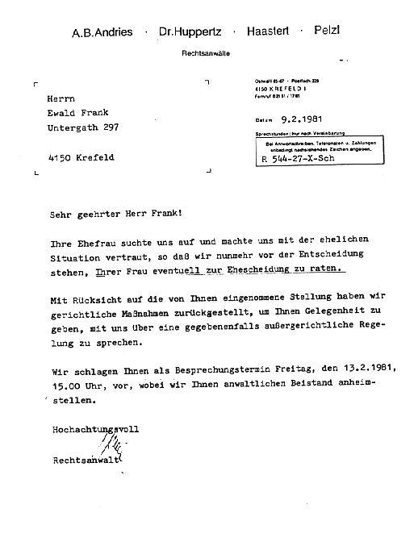

“Jésus-Christ est le même hier, aujourd’hui, et éternellement” (Hébreux 13.8).
LETTRE CIRCULAIRE N° 33
JANVIER 1987
20 ANS DE TRAVAIL MISSIONNAIRE DANS LE MONDE ENTIER
Je vous salue tous très cordialement dans le précieux Nom de Jésus-Christ par la parole de Philippiens 3.12-15:
“Non que j’aie déjà reçu le prix ou que je sois parvenu à la perfection, mais je poursuis, cherchant à le saisir, vu aussi que j’ai été saisi par le Christ. Frères, pour moi, je ne pense pas moi-même l’avoir saisi, mais je fais une chose: oubliant les choses qui sont derrière et tendant avec effort vers celles qui sont devant, je cours droit au but pour le prix de l’appel céleste de Dieu dans le christ Jésus. Nous tous donc qui sommes parfaits, ayons ce sentiment, et si en quelque chose vous avez un autre sentiment, cela aussi Dieu vous le révélera…”.
Dans ce court passage de l’Ecriture sont exprimées des idées et des vérités d’une grande puissance. Celui qui a été placé par Dieu, au moyen de l’appel divin, parmi ceux qui suivent Christ a un but devant lui. Cependant aucun ne se convaincra lui-même ou ne prétendra tout connaître ou avoir tout expérimenté, mais il cherchera toujours à nouveau de plus grandes bénédictions tout en gardant les yeux fixés sur le but placé devant lui. Les bénédictions ne sont pas une fin en soi, non plus que les expériences, mais ce qui compte est que nous atteignions le but.
Pour ce qui concerne le niveau de connaissance, des différences peuvent apparaître mais le but demeure le même. Paul écrit en considérant ces différences: “… et si en quelque chose vous avez un autre sentiment, cela aussi Dieu vous le révélera” (Phil. 3.15). Le salut et notre bonheur éternels ne dépendent pas d’une doctrine ou d’une connaissance; au contraire ils sont fondés exclusivement sur l’oeuvre de rédemption pleinement accomplie et sur la réconciliation avec Dieu par la mort de Christ à la Croix de Golgotha.
Ce n’est pas en se disputant les uns avec les autres, mais bien seulement en marchant avec Dieu que l’on ira de clarté en clarté et de connaissance en connaissance, “jusqu’à ce que nous parvenions tous à l’unité de la foi et de la connaissance du Fils de Dieu, à l’état d’homme fait, à la mesure de la stature de la plénitude du Christ: afin que nous ne soyons plus de petits enfants, ballottés et emportés çà et là par tout vent de doctrine dans la tromperie des hommes, dans leur habileté à user de voies détournées pour égarer” (Eph. 4.13,14). C’est seulement dans la mesure où nous pratiquons la vérité, et que dans l’amour nous croissons en tout point en Lui pour parvenir à l’état d’homme fait, que nous serons arrachés aux courants divers des doctrines qui égarent. Une croissance dans l’Esprit n’est pas possible dans de fausses doctrines, car l’Esprit ne peut agir qu’en rapport avec la Parole et selon la Parole. Derrière chaque fausse doctrine se tiennent de faux esprits.
En général, un homme appelé de Dieu ne doit pas regarder en arrière. L’Ecriture nous donne pour exemple la femme de Lot. L’apôtre Paul aussi attire notre attention sur le fait que nous devons oublier les choses qui sont derrière nous et avancer les yeux fixés sur le but. Nous devons croire qu’au travers de Golgotha Dieu a tiré toutes choses au clair, qu’une parfaite justification a eu lieu, que l’acte dont les ordonnances nous condamnaient a été déchiré et que nos péchés ont été définitivement jetés dans la mer de l’oubli. Il y a bien des choses que Dieu a faites et qui, par cela même, sont dignes d’être mentionnées.
Aussi, spirituellement parlant, personne ne devrait retourner à l’endroit d’où Dieu l’a appelé. Notre modèle en cela est Abraham qui, à l’appel du Seigneur, quitta sa patrie pour aller dans un pays étranger. Bien sûr, la plupart d’entre nous sont au courant de l’histoire d’Abraham. Dieu l’appela et lui fit des promesses qu’Abraham crut et qu’il vit s’accomplir. Dans Hébreux 11.9,10 il est dit de lui: “Par la foi, il demeura dans la terre de la promesse comme dans une terre étrangère, demeurant sous des tentes avec Isaac et Jacob, les cohéritiers de la même promesse; car il attendait la cité qui a les fondements, de laquelle Dieu est l’architecte et le créateur”. Les vrais croyants sont désignés comme étant la postérité d’Abraham. Ils dressent leur tente sur la terre, tout en sachant bien qu’ils n’y sont que voyageurs et étrangers. Dans le Royaume des Cieux ils prendront part au grand Repas avec Abraham, Isaac et Jacob (Mat. 8.11).
Dans Galates 4.28 Paul dit: “Or vous, frères, comme Isaac, vous êtes enfants de la promesse”. Celui qui est vraiment né de la Semence divine croit et expérimente les promesses que Dieu lui a données.
Cette lettre circulaire constitue une exception car nous y présentons une rétrospective des vingt ans de cette oeuvre et certains points culminants y seront relevés. Cela fait en tout maintenant trente-trois ans que je prêche et que je sers le Seigneur. Déjà en 1953 j’avais pris la parole lors de la conférence internationale de Pentecôte à Kassel, RFA. Je me souviens encore bien m’y être référé alors au passage biblique d’Apocalypse 3.24. A cette époque je ne savais encore rien de frère Branham, de son appel ou de son ministère, cependant j’avais déjà réalisé à ce moment-là que nous nous trouvions maintenant dans l’âge de Laodicée.
Quand je repense à la façon dont l’Esprit m’a guidé, aux nombreuses fois où les passages concordants de la Parole m’ont été directement révélés, je suis alors rempli d’une profonde reconnaissance. Ce n’étaient pas des rêveries ni des imaginations pieuses, mais c’était une introduction fondamentale et concrète dans la Parole, et par cela même dans la volonté de Dieu, et finalement dans tout le conseil du salut de Dieu tel qu’il a été conçu de toute éternité et qui arrive maintenant à son achèvement.
L’amour pour la Parole de Dieu a été éveillé en moi déjà dans la maison de mes parents, où la Bible reposait sur la table et n’en était enlevée qu’aux repas. Aussitôt que l’un des six enfants que nous étions savait lire, il devait lire à haute voix deux versets lors des méditations quotidiennes. Et cela à chacun son tour.
Mon père, qui lui aussi était au service de la Parole, a été pour moi un véritable ami et me fut d’un grand soutien à tout point de vue. Jusqu’au dernier jour de sa vie je lui ai toujours témoigné le respect qui lui était dû. Comme aussi tous ceux qui connaissaient ma mère pourront confirmer qu’elle était une femme ayant pris la place qui était la sienne. Elle n’a jamais élevé la voix, jamais il n’y eut de dispute. Elle avait réellement la nature que toute femme ayant la crainte de Dieu selon les Saintes Ecritures devrait avoir.
Pour autant que je sache, je n’ai jamais manqué au quatrième commandement qui dit: “Honore ton père et ta mère”. Je ne me souviens pas une seule fois avoir traité mon père ou ma mère d’une façon inconvenante. Pour moi ce qu’ils disaient avait valeur de commandement. Ce fut assurément le Seigneur qui me l’a mis à coeur et qui m’a fait la grâce de le pratiquer. De moi-même je n’en aurais pas été capable.
UNE NOUVELLE PERIODE
En 1955, une nouvelle période commença pour moi dans le domaine spirituel. Je pris part à Karlsruhe aux réunions bénies de frère Branham. Les événements auxquels j’assistai pendant une semaine n’étaient en rien inférieurs à ceux du temps des apôtres. Il n’est pas exagéré d’affirmer que le ministère plein d’autorité de cet humble serviteur de Dieu avait une grande analogie avec le ministère de Jésus-Christ.
Evidemment je fus très impressionné et saisi par tout ce que je vis, entendis et vécus, cependant je n’en restai pas là. Une voix intérieure me dit: «Cet homme a reçu un appel extraordinaire auquel est rattachée une mission spéciale». J’avais expérimenté avec des milliers d’autres personnes comment il disait par divine révélation aux malades venus pour la prière tout ce que Dieu lui montrait en visions. Je compris vite qu’il ne pouvait absolument rien savoir de leur vie car il ne parlait pas notre langue et n’avait non plus jamais auparavant visité la Suisse ni l’Allemagne. J’expérimentai là pour la première fois le fait que Dieu lit dans la vie et dans le coeur de chacun en particulier comme dans un livre ouvert.
Au vrai sens du terme nous avons expérimenté, par le moyen de ce ministère auquel nous avons assisté, la même chose qu’il nous est dit du ministère de Jésus-Christ. A l’époque Il dit à Nathanaël qu’Il ne connaissait pas: “Voici un vrai Israélite, en qui il n’y a pas de fraude… Avant que Philippe t’eut appelé, quand tu étais sous le figuier, je te voyais” (Jean 1.48,49). A Philippe le Seigneur avait dit: “Suis-moi!”. Et Philippe alla là-bas et dit à Nathanaël: “Nous avons trouvé celui duquel Moïse a écrit dans la loi…”. Lorsque Philippe eut terminé son récit, Nathanaël lui demanda: “Peut-il venir quelque chose de bon de Nazareth? Philippe lui dit: Viens et vois!”. Quelle merveilleuse invitation de la part d’un homme qui s’était mis à suivre Jésus! Il en est de même pour chacun de ceux qui ont fait une expérience avec le Seigneur et qui en rendent témoignage à d’autres afin que ceux-ci puissent aussi venir à Christ.
Nathanaël fut tellement impressionné qu’il s’écria: “Rabbi, tu es le Fils de Dieu; tu es le roi d’Israël!”. C’était le ministère prophétique de Jésus-Christ qui attirait les uns et repoussait les autres. Les véritables croyants acceptèrent, les autres refusèrent. Lorsqu’André emmena son frère à une réunion, le Seigneur dit à Pierre: “Tu es Simon, le fils de Jonas: tu seras appelé Céphas (qui est interprété “Pierre”)” (Jean 1.43). Pierre fut aussi très impressionné de ce que le Seigneur le connaissait et de ce qu’Il connaissait même le nom de son père. C’était le signe distinctif du Messie. Lorsque le Seigneur parla à la femme de Samarie, Il lui dit: “… tu as eu cinq maris, et celui que tu as maintenant n’est pas ton mari… La femme lui dit: Seigneur, je vois que tu es un prophète… je sais que le Messie qui est appelé le Christ, vient; quand celui-là sera venu, il nous fera connaître toutes choses. Jésus lui dit: Je le suis, moi qui te parle” (Jean 4.16-26).
Celui qui lit les quatre Evangiles rencontre continuellement le ministère prophétique de Jésus-Christ. C’est le signe qu’Il était bien le Messie. Et c’est justement à cela que les pieux conducteurs religieux s’achoppèrent et ils dirent: “Celui-ci ne chasse les démons que par Béelzébul, le chef des démons”. C’était grave de dire cela; mais il est encore plus grave que quelqu’un attribue à Satan l’oeuvre de l’Esprit de Dieu qui a été manifestée par le même ministère et de la même manière. En ce temps-là le Seigneur dit: “Tout péché et tout blasphème sera pardonné aux hommes, même celui contre le Fils de l’homme, mais le blasphème contre l’Esprit ne sera pas pardonné” (Mat. 12.31,32).
Dans Jean 14.12 le Seigneur fit la promesse que ceux qui croiraient en Lui accompliraient les mêmes oeuvres qu’Il a faites. Celui qui qualifie l’oeuvre de l’Esprit de Dieu comme venant de Satan prononce à l’instant même Sa propre condamnation éternelle.
Des centaines de milliers de personnes ont expérimenté le don absolument infaillible de discernement et de révélation. Ce sont des choses que l’on pouvait entendre et voir, et qui étaient alors “AINSI DIT LE SEIGNEUR”. A l’origine les prophètes étaient appelés des “voyants” (1 Sam. 9.9) parce qu’ils recevaient premièrement, et à chaque fois par une vision, ce que Dieu voulait leur montrer. En outre l’inspiration divine venait pour que le sens de ce qui avait été montré soit reconnu dans sa vraie signification et que l’on sache que c’était le “AINSI DIT LE SEIGNEUR”. C’est ainsi que la Parole fut donnée aux vrais prophètes; c’est ainsi également que Jésus accomplit Son ministère comme “Fils de l’homme”. Il dit: “En vérité, en vérité, je vous dis: Le Fils ne peut rien faire de lui-même, à moins qu’il ne voie faire une chose au Père…” (Jean 5.19).
C’est exactement cela que vécurent d’innombrables personnes durant de nombreuses années au travers du ministère de frère Branham. Après la prédication et l’appel à l’autel, il priait pour les malades. Que ce soit aux USA, au Canada, en Europe, en Asie ou en Afrique, sans distinction de races, de peuples ou de langues, le Saint-Esprit agissait toujours et partout de la même façon infaillible. Ce serait ridicule, pour ne pas dire un blasphème que de vouloir attribuer à Dieu des manquements, une connaissance partielle ou de l’imperfection. Aujourd’hui encore, des centaines de prédications sont à la disposition de celui que cela intéresse comme témoignages impressionnants.
Lors de notre première rencontre personnelle j’ai eu le privilège de faire moi-même l’expérience de ce discernement lorsque frère Branham vint à moi, s’arrêta un bref instant en face de moi, me désigna du doigt et dit: «You are a minister of the Gospel (Tu es un prédicateur de l’Evangile)». Je me trouvais alors justement à la réception de l’hôtel “Les trois Tilleuls” à Karlsruhe-Durlach lorsqu’il entra. Nous ne nous étions jamais rencontrés jusqu’alors. Ce que j’ai vécu, vu et entendu, personne ne peut me le contester.
En juin 1958, pendant la conférence de “Voice of Healing” à Dallas, au Texas, à laquelle prirent part une centaine d’évangélistes, je reconnus soudain et comme par une révélation que le ministère prophétique de frère Branham, du point de vue biblique, se différenciait de tous les autres. Je sus à partir de ce moment qu’il avait non seulement une vocation particulière mais qu’il avait une mission en rapport direct avec l’histoire du salut. A partir de ce moment je reçus chacune de ses prédications données à Jeffersonville en Indiana, et pus ainsi participer à l’évolution et au développement spirituel en cours. Je tenais absolument à savoir ce qu’il croyait et enseignait, car je voyais que Dieu était avec lui.
APPEL AU MINISTERE
Comme vous le savez bien tous, le 2 avril 1962, juste avant le lever du jour je vécus une expérience exceptionnelle. Les paroles du Seigneur que j’entendis alors me transpercèrent jusqu’à la moelle. Elles pénétrèrent en fait dans mon âme et mon esprit. Aujourd’hui encore je serais même capable de redonner l’intonation de cette voix. Je fus tellement subjugué par l’absolu et le définitif de ces paroles que je sus qu’ici parlait Celui par la Parole duquel tout fut appelé à l’existence. Ce qu’il me dit alors s’est réalisé dans le monde entier durant ces vingt années écoulées. Je suis allé de ville en ville, de pays en pays et j’ai annoncé la Parole comme cela me fut ordonné. En ce qui concerne aussi la seconde partie, je l’ai pour autant que je sache fidèlement exécutée en distribuant la nourriture spirituelle qui nous a été laissée, c’est-à-dire la Parole révélée pour notre temps. Il en va de même pour la dernière phrase qu’Il a prononcée: «Ne fonde pas de communautés locales et n’édite pas de recueils de cantiques car c’est là le signe d’une dénomination».
A cause de cet appel divin audible, l’année 1962 a une signification toute particulière pour moi. Comme déjà dit, immédiatement après ma conversion je commençai à prêcher. Cependant après cet événement j’eus la certitude non seulement d’avoir à prêcher mais encore d’y avoir été réellement destiné par Dieu. La date du 3 décembre 1962 est demeurée inoubliable pour moi car c’est ce jour-là que frère Branham sur la base d’une révélation divine me répéta et me confirma l’appel et les paroles du Seigneur du 2 avril 1962.
TACHES DIVERSES
Comme chacun de ceux qui ont été appelés par Dieu pour un ministère, ainsi moi aussi je ne peux faire que ce qu’Il m’a ordonné. Je ne peux pas simplement imiter ce que d’autres ont fait, mais je dois accomplir mon ministère selon l’ordre divin reçu. En lisant les Saintes Ecritures, nous constatons que chaque vrai homme de Dieu avait des tâches tout à fait différentes à accomplir.
Le prophète Noé n’a fait ni signe ni miracle, il a simplement bâti l’arche ainsi que le Seigneur le lui avait dit (Gen. 6.22).
Abraham n’était pas un prophète venu prêcher la repentance au milieu du peuple. Il ne fit également que ce que le Seigneur lui avait ordonné et il se mit en route pour la Terre promise.
Le ministère de Moïse fut tout à fait différent. Par lui eurent lieu de puissants signes et miracles car Dieu en avait ainsi décidé. Moïse agit selon ce qui lui avait été ordonné.
Le ministère de Josué se distingua de nouveau de celui de tous les autres. Cependant lui aussi exécuta exactement ce qui lui avait été ordonné.
Elie et Elisée firent eux aussi des signes et des miracles puissants. Comme Elisée avait demandé la double portion, il accomplit exactement deux fois plus de miracles qu’Elie.
Le prophète Esaïe a mis par écrit au cours des 66 chapitres l’ensemble de l’histoire du salut comme on ne la trouve plus dans tout l’Ancien Testament. Cependant pas une seule confirmation divine de son ministère n’est mentionnée. C’est pourtant lui qui a écrit sur la naissance de Jésus, sur le ministère de Jean-Baptiste, les souffrances de notre Rédempteur, et même sur un nouveau ciel et une nouvelle terre. Celui qui le comparerait à Moïse pourrait demander: «Où donc se trouve la confirmation de son ministère?».
Passons à Jérémie et Ezéchiel qui ont eux aussi pour une part contribué à l’histoire du salut et à son déroulement; prenons les prophètes, de Daniel à Malachie, et nous verrons que tous ont exécuté ce que Dieu leur avait ordonné de faire, et écrit ce qui leur avait été donné par inspiration divine. Aucun d’eux n’a copié l’autre, chacun avait reçu un appel originel et un ministère correspondant au plan et à la volonté de Dieu. On n’a pas le droit de les classer ou de donner un rang à aucun d’eux, disant que l’un aurait été grand, l’autre petit, et que Dieu aurait confirmé ici et non pas là. La première chose qu’un enfant de Dieu doit avoir est le respect devant une décision divine, et dans ce cas-ci il doit l’avoir à l’égard d’un appel céleste. Tous ceux qui veulent subsister devant Dieu auront ce même respect à l’égard de ceux que le Seigneur a établis et mandatés.
Lorsque nous passons au Nouveau Testament nous rencontrons en premier le ministère de Jean-Baptiste. Il n’avait aucun signe ou miracle à montrer mais il a annoncé la Parole de l’heure, le message de Dieu pour ce moment-là, et il a frayé le chemin du Seigneur. Jésus Lui-même dit de Jean-Baptiste: “Parmi ceux qui sont nés de femmes, il n’en a été suscité aucun de plus grand que Jean le Baptiseur” (Mat. 11.11). De même dans les Actes des apôtres, ainsi que dans les épîtres, nous rencontrons la multiplicité des ministères correspondant à leur appel. La tâche d’un Paul était autre que celle d’un Pierre. Il ne nous a pas été rapporté la même chose d’un Timothée ou d’un Tite que d’un Pierre et d’un Paul. Cependant ces serviteurs de Dieu avaient tous une chose en commun: la même Parole et la même révélation, car ils puisaient à la même source.
Personne ne peut attendre de moi que j’imite le ministère de frère Branham, mais chacun peut être sûr que je proclame le pur message divin que le Seigneur a maintes fois confirmé. Comme frère Branham pouvait dire: «J’ai prêché la même Parole que Paul a prêchée» et que des millions s’exclamèrent: «C’est là-dessus que nous nous reposons!», moi aussi je peux dire: «Ce que Paul et frère Branham ont annoncé, c’est cela même que j’ai prêché!».
Si je voulais consigner par écrit les nombreux témoignages de guérisons et de confirmations surnaturelles, celles-ci rempliraient une brochure supplémentaire. Je voudrais juste mentionner un miracle de guérison marquant que nous avons expérimenté dernièrement. En avril de l’année dernière nous avons reçu une demande de prière d’un frère et d’une soeur de Tchécoslovaquie. Leur unique enfant était malade depuis deux ans; il avait été abandonné par les médecins et était voué à une mort certaine. Sa guérison qui eut lieu un mercredi soir fut un exaucement direct de prière.
Ces dernières années, je me suis principalement consacré au travail de traduction et à la prédication. Plus nous nous approchons de la fin, plus la confirmation surnaturelle parmi ceux qui écoutent et croient la Parole ira en augmentant. Le 3 décembre 1962, alors que nous étions déjà revenus à la voiture, j’ai demandé à frère Branham si moi aussi je pouvais prier pour les malades. Il me répondit mot pour mot: «Frère Frank, quiconque a été appelé pour annoncer l’Evangile a aussi été appelé à prier pour les malades». Ensuite il me serra dans ses bras et me bénit en priant.
UNE PHASE NOUVELLE
En 1966 commença pour moi la phase qui est peut-être la plus importante de ma vie. Comme on le sait l’ensevelissement de frère Branham eut lieu juste après le dimanche de Pâques, le 11 avril 1966. Je crois avoir dit, ou peut-être même écrit une fois ou l’autre ce que je ressentis lorsque je vis le cercueil descendre dans la tombe. Je n’arrivais pas à comprendre que cela se passait réellement. Il m’était impossible d’imaginer comment l’Epouse, sans ce ministère rempli de puissance et d’autorité, allait être préparée et achevée. Après l’ensevelissement je me rendis à ma chambre d’hôtel. Alors à la profonde douleur et aux larmes succéda tout à coup un repos intérieur et un sentiment de sûreté. Le même jour encore une voix intérieure me dit: «Maintenant le temps est venu de distribuer la nourriture». Sans devoir encore réfléchir à ce sujet, je sus ce que j’avais à faire.
Si je vous dis ici qu’à ce moment-là aucun des frères n’avait pensé à la propagation du Message divin, ce n’est ni présomptueux ni exagéré de ma part. Chacun rentra chez soi profondément déçu. La résurrection subite de frère Branham, à laquelle on s’attendait, ne s’était pas réalisée. Personne d’entre eux ne savait si les choses allaient continuer, ni comment.
Je pris immédiatement contact avec les frères qui avaient fait partie de l’entourage intime de frère Branham. J’arrivai à persuader Roy Borders d’imprimer les prédications afin qu’elles nous servent de modèles pour nos traductions. J’invitai Pearry Green aux réunions afin qu’il témoigne de ce qu’il avait vu personnellement. Une grande partie des frères semble avoir oublié que sans moi la propagation de ce message de la fin des temps n’aurait même jamais eu lieu, de même que sans frère Branham, ce message n’aurait jamais été donné. Il n’aurait jamais été publié ni en anglais ni en une autre langue. Ce fut moi aussi que le Seigneur utilisa pour organiser les premières réunions. Comme vous le savez tous, c’est au prix des plus grandes fatigues physiques que j’ai porté au loin la Parole révélée dans le monde entier. Ce faisant, je n’ai fait qu’exécuter ce qui m’avait été ordonné.
Je fus frappé de voir combien de fois, après l’ouverture des Sceaux, lorsqu’il mentionnait l’événement du 11 juin 1933, frère Branham mettait l’accent non sur lui-même mais sur le Message reçu. Selon sa prédication Le Lever du Soleil sa mission était la suivante: «De même que Jean-Baptiste fut envoyé comme précurseur de la première venue de Christ, de même ton message sera le précurseur de Sa seconde venue». Dieu reprend Ses serviteurs et Ses prophètes, mais la Parole apportée par eux nous reste. Nous aussi pouvons dire en ces jours avec une pleine certitude: “Et nous avons la parole prophétique rendue plus ferme…” (2 Pier. 1.19).
En mai 1966 commença la première période de la proclamation et de la propagation du message divin. On commença par la République Fédérale Allemande et par les pays voisins. Des centaines de personnes vinrent écouter ce que Dieu avait fait en notre temps. Ce n’était assurément pas mon plan ni ma volonté, mais c’était le Seigneur qui ayant déjà tout établi d’avance continuait Son oeuvre. Nous pouvons être certains que c’est seulement avec le retour de Jésus-Christ que cette oeuvre trouvera son achèvement. Très rapidement le message se propagea au-delà des frontières de l’Europe de l’Ouest vers l’Europe de l’Est, pour se répandre ensuite en Afrique, en Asie et dans le monde entier.
Les dix années de 1968-1978 pendant lesquelles nos prédications furent diffusées par Radio Luxembourg furent pour moi les années les plus riches en bénédictions et comportèrent le plus grand engagement. Ces émissions atteignirent aussi un grand nombre de personnes en Europe de l’Est. Partout des portes s’ouvrirent. Durant ces dix ans j’ai donné presque trois mille prédications. A ceci s’ajoutèrent les nombreux voyages missionnaires, les travaux de traduction, la correspondance et tout ce qui appartient à une telle oeuvre missionnaire. Souvent, dans l’avion, je notais encore courtement les passages bibliques, et chaque fois que je commençais à prêcher la Parole, c’était comme si je puisais à une source intarissable de laquelle toujours à nouveau ce qui venait de Dieu jaillissait par inspiration. Oh, avec quelle fidélité le Seigneur m’a donné les passages justes de l’Ecriture, a éclairé Sa Parole et en a révélé le contexte! Beaucoup peuvent témoigner que la Parole de Dieu arrivait réellement toute fraîche de Son Trône. Quelquefois j’ai même entendu audiblement le passage biblique que je devais lire.
INSTRUCTIONS DIRECTES
Les années soixante-dix furent, pour ceux qui croyaient la Parole prophétique, marquées en partie par la manie de fixer des dates. Toujours à nouveau je fus obligé de parler et d’écrire pour m’opposer à cela. Alors qu’en 1973 bien des gens attendaient la fin, je fus conduit à acheter le terrain sur lequel la chapelle devait être bâtie. Avec l’aide de Dieu et l’engagement inlassable de nos frères, la consécration put avoir lieu à Pâques 1974. Qui alors aurait osé croire que le temps se prolongerait aussi longtemps? Quelques-uns me firent le reproche d’une part de ne pas pouvoir croire que la venue de notre Seigneur était imminente, et d’autre part d’oser bâtir encore une chapelle. Cependant il s’est avéré juste de rester sobre et lucide car personne ne sait quand le Seigneur reviendra réellement.
Puis, lorsqu’on insista nettement sur l’année 1977, quelque chose arriva que moi-même ne compris tout d’abord pas. Autant que je m’en souvienne c’était le samedi 17 juillet 1976 à la nuit tombante, lorsque j’entendis le Seigneur me parler à haute voix et distinctement: «Rends-toi sur le terrain voisin et consacre-le-moi car il viendra des gens de près et de loin qu’il faudra loger». Je venais de faire le tour de l’église et me trouvais à la hauteur des escaliers menant au sous-sol de la salle. Bien sûr je m’arrêtai immédiatement, fis demi-tour et me rendis sur le terrain voisin. Là je m’agenouillai au milieu des broussailles, priai brièvement, levai les mains vers le ciel et dis: «Seigneur, mon Dieu, je fais ce que Tu m’as ordonné et je Te consacre ce terrain pour la gloire de Ton Nom».
Toutefois le propriétaire à qui je téléphonai aussitôt le lundi matin ne voulait pas vendre ce terrain. Il avait prévu un projet gigantesque avec des ateliers, des bureaux, d’immenses salles de vente et d’exposition, et il me dit: «Je regrette, mais je ne peux pas vous vendre ce terrain». Je compris certes ses raisons, mais je dus lui répondre: «N’oubliez pas que Dieu a étendu Sa main sur cela». Tout d’abord, l’affaire semblait ainsi réglée.
Une paix céleste régnait en moi: ce refus ne pouvait absolument pas ébranler ma foi. Je savais que tout reposait non pas dans mes mains mais dans les Siennes, car ce n’était pas ma décision mais la Sienne. Je ne me souviens pas avoir jamais ressenti auparavant dans mon coeur une telle plénitude de foi et de contentement. Il y avait en moi l’absolue certitude que ce que le Seigneur avait dit allait se réaliser. J’attendis simplement.
Trois semaines plus tard exactement, le téléphone sonna avant 8 h. du matin déjà. L’homme à l’autre bout du fil me dit: «Monsieur Frank, je me sens obligé de vous vendre ce terrain. Pouvons-nous aller cette semaine encore chez le notaire?». Le contrat d’achat fut conclu le 12 août 1976. Je n’avais pas prié Dieu une seule fois pour qu’Il incline le coeur de cet homme car je savais qu’Il le ferait. Justement à cette époque, alors qu’on mettait de grandes espérances dans l’année 1977, nous nous trouvions en pleine construction.
Tout d’abord nous n’avions prévu qu’une maison. Lorsque le gros-oeuvre venait d’être terminé, frère Schmidt vint à ma rencontre sur le chantier et me dit: «Frère Frank, ce bâtiment ne suffira même pas pour la moitié des visiteurs qui doivent venir». Nous continuâmes chacun son chemin, cependant ses paroles ne me quittèrent plus. La pensée de savoir si oui ou non un bâtiment supplémentaire devait encore être construit ne me sortait plus de l’esprit.
Je tombai dans une profonde détresse intérieure, car c’était une décision importante que j’avais à prendre, et le Seigneur ne m’avait rien fait savoir à ce sujet. Ainsi je cherchai la face de Dieu en criant à Lui de tout mon coeur dans la prière. Je fis alors quelque chose que je n’ai pas l’habitude de faire: Pendant que je m’agenouillai, je pris ma Bible, la posai devant moi et dis: «Seigneur, je dois prendre une décision dont je ne peux pas porter la responsabilité. Si c’est Ta volonté que deux maisons soient bâties, alors fais-le moi savoir!». Bien que la raison me dit qu’il n’y avait rien à ce sujet dans la Bible, je m’attendais cependant à une réponse du Seigneur. J’ouvris ma Bible, et mon regard tomba sur le verset 6 de 2 Chroniques, chapitre 14 (Seg.): “Bâtissons ces villes… Ils bâtirent donc et ils réussirent”. Ce que l’on ressent lorsqu’on vit une telle expérience ne peut être décrit en paroles. Je compris immédiatement que là il n’était pas question d’un bâtiment mais de plusieurs bâtiments. Le lendemain je me mis immédiatement en rapport avec l’Office des constructions et reçus, sans avoir à présenter de nouveaux plans l’autorisation de construire le second bâtiment. Ainsi s’accomplit littéralement le passage disant que les constructions seraient menées à bien et prospéreraient, et qu’elles seraient livrées à leur destination.
Dans ces deux bâtiments de la mission se trouvent l’imprimerie, les locaux pour les bureaux, pour la préparation des brochures et leur expédition, ainsi que les chambres de visiteurs et les appartements. C’est en fait de cette manière que Dieu n’a pas aidé et guidé seulement du point de vue spirituel mais aussi dans le domaine matériel nécessaire à la réalisation de ce projet.
DOCTRINES PERNICIEUSES
Alors que nous comptions sur une action particulière du Seigneur, Satan frappa d’une manière incompréhensible. Chaque lecteur de la Bible sait qu’il a manifesté sa colère envers le peuple d’Israël, envers ses chefs et tout particulièrement envers ses prophètes. Jérusalem a été la cible de ses attaques diaboliques depuis que Dieu l’a choisie. Aucune ville au monde n’a été détruite aussi souvent qu’elle. Même maintenant à la fin, Dieu fait d’elle une pierre pesante pour tous les peuples du monde (Zach. 12.3). Ainsi nous ne devrions au fond pas être étonnés de ce que Satan va faire appel à toutes ses puissances pour causer le plus de mal possible à l’Eglise. Cependant même les portes de l’enfer ne pourront triompher d’Elle.
Très significatif est le fait que des prédicateurs, proclamant des doctrines divergentes, affirment toujours à nouveau que la révélation des sept tonnerres aurait commencé à se déployer à partir de 1979. Il est dit que la demi-heure de silence dont il est question dans Apocalypse 8.1 aurait commencé en 1963 et se serait terminée en 1983. On a voulu me persuader que le Seigneur aurait en fait rompu le silence à la fin de 1983 seulement. Cependant on répète sans cesse que depuis 1979 le septième Sceau, les sept tonnerres et tout ce qui s’y rapporte auraient été révélés. Les nombreuses fausses doctrines qui se sont propagées aujourd’hui ne se comptent plus. Je suis effrayé de voir ce que l’on a fait du Message et de la Parole de Dieu. Les passages bibliques et les citations de frère Branham ont été faussées et on y a rajouté comme il n’est plus guère possible de faire pire.
Lorsque je rejette ces choses-là avec fermeté, on me dit que je suis le seul des frères internationalement connus à ne pas accepter toutes ces soi-disant “profondes révélations”. J’aurais soi-disant manqué la venue de l’Epoux vers l’Epouse (selon Matthieu 25) qui d’après l’enseignement actuel serait déjà unie à Lui et devenue ainsi Son Epouse, comme Lui serait devenu son Epoux. Je n’aurais pas non plus remarqué que la résurrection des morts aurait déjà eu lieu. On prétend que les tombes désignent les dénominations mortes dont les croyants ont été tirés. Je n’aurais pas davantage expérimenté l’enlèvement qui aurait soi-disant eu lieu au milieu “d’une nuée de témoins”.
Ce développement faux et tragique commença déjà à la fin des années soixante et se poursuivit plus tard sous une forme modifiée. Continuellement des hommes parurent avec de nouvelles interprétations, mais à chaque fois c’étaient les mêmes esprits qui étaient à l’oeuvre et qui le sont encore. Déjà rien que les différentes interprétations des tonnerres qui sont propagées et enseignées conduisent à une confusion funeste sans remède. En outre, ceux qui enseignent les tonnerres s’accusent mutuellement de mal interpréter.
Les défenseurs de la doctrine de la Parousie affirment que Christ serait venu sur terre le 28 février 1963 et qu’Il s’y trouverait encore depuis lors. Il s’agit ici des mêmes personnes qui ont prédit la venue du Seigneur, d’abord pour 1973 et ensuite, avec la plus grande insistance, pour 1977. La seule chose que l’on puisse dire à ce sujet est que Jésus est aujourd’hui aussi présent qu’Il l’a été depuis Pentecôte parmi les croyants. Notre Seigneur nous a fait la promesse de nous prendre dans Sa demeure, et Il nous a assuré être présent là où deux ou trois sont assemblés en Son Nom. Il a dit: “Je serai avec vous jusqu’à la fin du monde!”. Cette parole demeure valable jusqu’à la venue de Christ. C’est à Son retour seulement que l’ensemble de Son Epouse rencontrera son Epoux.
Il est manifeste que ce n’est pas l’Esprit de Dieu qui anime les faux docteurs. Ce que ceux qui les écoutent n’ont pas encore clairement saisi jusqu’à maintenant est le fait qu’il s’agit ici directement de l’esprit anti-christ qui, comme le dit 1 Jean 4.1-6, a nié en son temps que Christ est venu en chair et qui nie maintenant “Jésus-Christ venant en chair” (2 Jean 1.7-11). De telles personnes fourmillent dans “le message falsifié des temps de la fin”. Nous donnons les passages bibliques et citations suivants pour secourir tous ceux qui désirent encore se laisser aider.
Le mot Parousie signifie “arrivée”; le mot Epiphanie signifie “apparition”. Celui qui est présent maintenant dans l’Esprit vient alors corporellement: c’est la Parousie. Après avoir mis Ses ennemis comme marche-pied de Ses pieds, Il apparaît pour l’édification de Son Royaume: c’est l’Epiphanie. En grec, les mots Parousie et Epiphanie sont mentionnés à plusieurs endroits qui traitent de ce thème.
Celui qui spiritualise le retour de Christ, comme tant de gens l’ont fait dans le passé et le font encore dans le présent, depuis Augustin jusqu’aux Témoins de Jéhovah, est victime de la même tromperie. Un tel homme ne connaît ni la Bible ni le Message. Aussi sûrement que Jésus-Christ est ressuscité corporellement et qu’Il est monté ainsi au Ciel, tout aussi sûrement reviendra-t-Il corporellement. Les deux citations suivantes donnent la preuve que frère Branham l’a aussi enseigné:
«La prochaine chose qui arrive a lieu quand tous sont assemblés, l’Epouse et le Corps, dans une Personne, Jésus-Christ, au retour physique du Seigneur Jésus…». [Christ révélé dans Sa propre Parole, prêché le 22 août 1965, anglais p. 36, §142]. «Comme tous le croient, je crois en un règne de mille ans avec Christ sur la terre, en un retour physique du Seigneur Jésus pour prendre un peuple physique, glorifié par Son Sang qui purifie». [L’union invisible de l’Epouse de Christ, prêché le 25 novembre 1965, anglais p.7]
Ainsi parle le Seigneur en tant que Ressuscité: “Voyez mes mains et mes pieds — que c’est moi-même: touchez-moi, et voyez, car un esprit n’a pas de la chair et des os, comme vous voyez que j’ai” (Luc 24.39). Jésus n’est pas un mythe, une explication imaginée. Il est le Dieu personnel qui est apparu comme Seigneur sous une forme humaine.
Thomas Le toucha, mit ses mains à Son côté et s’écria alors: “Mon Seigneur et mon Dieu!” Comme nous l’avons déjà maintes fois exposé, le même Jésus qui est ressuscité et est monté au Ciel reviendra de la même manière (Act. 1.11). Celui qui nie cela n’est absolument pas né de nouveau mais est tombé dans une exaltation religieuse. Car comme l’éclair sort de l’orient et apparaît jusqu’à l’occident, ainsi sera la venue du Fils de l’homme (Mat. 24.27). C’est ainsi que se réalisera la parole disant que l’un sera pris et l’autre laissé (Mat. 24.40,41).
A ce moment-là arrivera ce qui est écrit dans 1 Corinthiens 15.51-54: “Voici, je vous dis un mystère: Nous ne nous endormirons pas tous, mais nous serons tous changés: en un instant, en un clin d’oeil, à la dernière trompette, car la trompette sonnera et les morts seront ressuscités incorruptibles, et nous, nous serons changés. Car il faut que ce corruptible revête l’incorruptibilité, et que ce mortel revête l’immortalité. Or quand ce corruptible aura revêtu l’incorruptibilité, et que ce mortel aura revêtu l’immortalité, alors s’accomplira la parole qui est écrite: La mort a été engloutie en victoire”. Remarquez que les morts ressusciteront directement incorruptibles et que nous, nous serons changés. Il est certain que ceci n’a pas encore eu lieu. Jusqu’à présent tous sont encore là. De même ce qui est écrit dans 1 Thessaloniciens 4.13-18 se réalisera littéralement.
Comment certains frères peuvent-ils prétendre que le retour du Seigneur aurait eu lieu en 1963 alors que frère Branham a mis l’accent jusqu’à la fin de ses jours sur le fait qu’il attendait la venue du Seigneur? Le 25 juillet 1965, dans la prédication: Quelle est l’attraction sur la montagne? [anglais p.1, §3], il salue plusieurs communautés par leur nom et y souligne tout particulièrement qu’elles attendent le retour du Seigneur. Il s’inclut lui et sa communauté dans cette attente par les paroles suivantes: «Ce soir nous sommes assemblés comme un seul bloc de croyants, attendant la venue du Messie. Et nous Te prions, Père céleste, que Tu L’envoies bientôt pour Ton Eglise».
Dans la prédication L’union invisible de l’Epouse de Christ, du 25 novembre 1965, il dit à la page 4: «Maintenant nous nous attendons à la venue du Seigneur dans notre génération».
La seconde venue de Christ sera exactement comme Sa première venue un événement puissant.
LE JUGE
Il est vrai que l’ouverture des Sceaux a été un événement tout à fait particulier, qui a été précédé du nuage surnaturel sur la montagne dans lequel le Seigneur ne s’est pas révélé en tant que Fils de l’homme, mais s’est plutôt montré en tant que Juge. Pendant de nombreuses années Il s’est fait connaître comme Fils de l’homme à travers le ministère prophétique de frère Branham. Des dizaines de milliers de fois frère Branham L’a vu présent dans la Lumière surnaturelle alors qu’il priait pour les malades. Qu’il me soit permis de citer ici deux passages dans lesquels frère Branham décrit le puissant événement du 28 février 1963: «C’est eux qui prirent la photographie, pas nous. Et Le voici se tenant là, le Juge Suprême, montrant qu’Il est l’Alpha et l’Oméga, le commencement et la fin. Quelle identification!». [Le lever du Soleil, prêché le 18 avril 1965] «Quelque chose me dit: ‹Tourne-la correctement!› Je pensai: ‹Je la regarde déjà correctement!›. On avait dit: ‹Tourne-la droite›. Je pensai: ‹Peut-être que la voix veut dire: ‹Tourne-la à droite››. Et quand je fis cela, comme vous le voyez, cela représentait la Tête de Christ à trente-trois ans, comme le peignit Hoffmann. Voyez cela: Voyez Sa barbe sombre, Son visage, Ses yeux, Son nez, etc. Voyez-vous comment une partie de Ses cheveux remonte là? Et Il est coiffé de cette perruque blanche que forment les anges, montrant que le Message qui Le présente comme étant Dieu est la Vérité. Il est le Juge Suprême de l’univers, Il est le Juge Suprême du Ciel et de la terre. Il est Dieu, et rien d’autre que Dieu». [Essayant de rendre un service à Dieu, prêché le 27 novembre 1965, anglais p. 14, §92]
Ce fut un événement puissant et nous avons pu recevoir, grâce à la révélation des Sceaux, une vision approfondie dans les mystères de Dieu. Mais avons-nous saisi la raison pour laquelle le Seigneur s’est alors révélé en tant que Juge avant que les Sceaux soient ouverts, et qu’avec cela le jugement commence par la maison de Dieu? Le jugement n’est pas seulement une condamnation mais aussi une sentence. Ce qui a été prêché depuis l’ouverture des Sceaux est définitif. Nous serons jugés selon la Parole qui nous a été annoncée et entièrement révélée depuis cet événement. Lorsqu’un juge proclame sa sentence et met ainsi fin à la dispute entre différentes parties ainsi le Seigneur, en apparaissant dans le ciel comme Juge, voulait dire: «Je prononce maintenant la dernière parole!».
Depuis ce moment les débats sur les thèmes bibliques sont terminés. Il a rendu la justice en tant que Juge de l’Alliance. Il ne peut pas donner raison à ceux qui disputent sur des thèmes bibliques et s’opposent les uns aux autres. Au contraire: tous doivent accepter ce qu’Il dit comme étant l’Absolu déterminant. Il n’est plus question de débattre sur Sa Parole; au contraire Elle doit être acceptée. Combien de fois frère Branham a-t-il dit que certaines choses que lui-même ne connaissait pas auparavant ont été révélées seulement depuis l’ouverture des Sceaux!
Le Seigneur a, au cours des différents âges, envoyé des prophètes qui ont remis sur le chandelier certaines vérités bibliques. Les croyants de chaque âge seront jugés selon la Parole qui leur a été annoncée. Cependant c’est maintenant à la fin du temps de la grâce qu’Il s’est révélé Lui-même et qu’Il a dévoilé tout Son conseil.
Le temps est passé où un croyant juge les autres. Maintenant chacun doit se laisser juger lui-même par la Parole qui nous a été apportée. Dans Jean 12.48 le Seigneur dit: “La parole que j’ai dite, celle-là le jugera au dernier jour”. Le Seigneur dirait aujourd’hui la même chose. Celui qui se juge ici-bas ne sera plus jamais jugé là-haut. Mais celui qui juge les autres, son propre jugement le trouvera en ce jour-là (Rom. 2.1).
Nous ne pouvons pas continuer à propager notre propre connaissance et nous y tenir, mais devons nous soumettre en toutes choses à Dieu et à Sa Parole. Ceux qui affirment que le Seigneur est revenu comme Fils de l’homme le 28 février 1963 n’ont pas saisi ce qui s’est passé véritablement. C’est cela qui a introduit le début de la dernière phase, mais n’a pas signifié que le temps de la grâce était terminé.
PARTICIPANT DE SON PLAN
Celui qui regarde en arrière ne peut aller de l’avant. D’autre part, le passé doit être maîtrisé avant que l’on puisse s’occuper de l’avenir.
Parce que l’on insiste toujours à nouveau sur l’année 1979, d’anciens souvenirs me reviennent en mémoire. Ce que je ne voulais pas admettre alors devient toujours plus évident: Satan voulait m’écarter, c’est-à-dire m’obliger à cesser de prêcher. Cela ne lui a pas réussi. C’est pourquoi il continue de toutes les façons possibles à essayer de m’en empêcher. Ceux qui se laissent prendre à ses manoeuvres trompeuses dévient de la Parole et il peut ainsi les conduire par le bout du nez et les berner sans entrave. Les mêmes esprits religieux d’égarement qui étaient à l’oeuvre ici continuent inlassablement leur travail de destruction en tous lieux. Ceux qui se sont laissés tromper s’expriment ouvertement et disent: «Tu n’as plus le droit de prêcher». D’autres encore affirment: «Tu n’as absolument rien à prêcher puisque tu ne proclames pas ce qui a été nouvellement révélé». On dit: «Vous êtes restés sur place; nous, nous avançons». On se demande seulement dans quelle direction!
Je n’ai pas l’intention ici de discuter avec les gens qui sont dominés par des esprits pernicieux et qui s’en trouvent bien, mais je n’ai pas non plus le droit de me taire à l’égard de tout cela. Pour moi, il s’agit de l’oeuvre de Dieu dans laquelle je me sais engagé et pour laquelle je dois rendre compte. Si maintenant certaines choses sont dites, ceci arrive uniquement pour que tous comprennent qu’au fond les attaques de l’ennemi ne me concernent pas en tant qu’individu, car je n’ai fait aucun mal à personne. La rage de Satan est dirigée contre le ministère que Dieu a établi. C’est contre le Message divin qu’il a une haine mortelle et ce qu’il aimerait le plus c’est le détruire; c’est pourquoi il s’acharne sur celui qui le porte. Satan n’a-t-il pas, depuis le temps de Caïn, versé le sang des prophètes, d’Abel jusqu’à Zacharie? Pourquoi cela? Tout simplement parce qu’ils étaient les porteurs de la Parole! Amen.
Qu’y puis-je si le Seigneur m’a appelé d’une voix audible à Son ministère? Qu’y puis-je s’Il m’a parlé à plusieurs reprises? Somme toute, je n’ai eu aucune influence en cela. Si le Seigneur a ordonné à frère Branham d’emmagasiner de la nourriture, qu’y pouvait-il? S’Il m’a ordonné de la distribuer, qu’y puis-je? Frère Branham a parlé dans plusieurs prédications de l’emmagasinage de la nourriture. Dans sa prédication du 30 décembre 1962 Messieurs, est-ce l’heure? [p.47, §330], il dit: «J’ai agi au mieux de ma connaissance en accord avec ce que les visions, les songes et autres choses ont dit. J’ai emmagasiné pour eux toute la nourriture que j’ai pu, Seigneur».
Cependant pas une fois il ne mentionne le fait que le Seigneur l’aurait aussi chargé de la distribuer. Quelle harmonie! Dieu seul peut mettre les choses en ordre de façon si parfaite. Je n’ai pas besoin d’inventer quoi que ce soit. L’expérience que j’ai vécue le 2 avril 1962 et la visite à frère Branham en rapport avec cette expérience ont déjà été publiées au début de 1963 par les éditions «Mehr Licht», 6ème édition, 37ème année. Il y aurait eu suffisamment de temps pendant les trois ans qui ont précédé la mort de frère Branham pour le questionner à ce sujet. En outre frère Russ et frère Schwill ont fait la connaissance, lors de notre visite en commun à Jeffersonville en décembre 1974 des frères Woods et Sothmann qui furent présents à cette conversation qui eut lieu avec frère Branham.
Dieu fit dire par la bouche du prophète Amos: “Voici, des jours viennent, dit le Seigneur, l’Eternel, où j’enverrai une famine dans le pays; non une famine de pain, ni une soif d’eau, mais d’entendre les paroles de l’Eternel” (Amos 8.11). Je suis si reconnaissant à Dieu que frère Branham en vertu d’une révélation divine ait confirmé mon expérience du 2 avril 1962 et qu’il ait dit: «Attends pour la distribution de la nourriture jusqu’à ce que vous receviez le reste qui en fait partie». A l’époque, à vrai dire, je n’en compris pas le sens mais n’osai pas non plus poser de questions là-dessus. Je rentrai chez moi affligé car j’avais compté commencer immédiatement mon ministère, mais voici que maintenant je devais attendre. Ces trois années d’attente furent terribles pour moi, cependant le Seigneur sait à quel moment Il fait une promesse, et Lui seul détermine le moment où elle s’accomplira. La confirmation d’un ordre donné se trouve dans sa réalisation.
Lors de ma visite à Edmonton au Canada au début des années soixante-dix, un frère vint un soir vers moi et me dit: «Frère Frank, ton ministère a un tel effet dans le monde entier! Il devrait se trouver dans la Bible». A cette époque, lors de tous mes voyages j’indiquais l’adresse d’Edmonton et c’était ce frère qui avec son équipe de travail expédiait les brochures en anglais en grandes quantités. Lorsqu’il me posa cette question, je fis un signe de dénégation et lui dis: «Mon frère, je ne fais que ce que le Seigneur m’a ordonné de faire et il n’y a pas d’indication concernant mon ministère dans la Bible, mais uniquement concernant le ministère de frère Branham». Le lendemain matin, à peine douze heures plus tard, j’entendis audiblement et distinctement la voix du Seigneur: «Mon serviteur, je t’ai établi selon Matthieu 24.45 pour distribuer la nourriture à mon peuple». Je peux seulement dire: Qu’est-ce que l’homme? Qui suis-je pour que Dieu m’ait fait miséricorde? Ainsi que Paul l’a écrit, Il prend ce qui n’est rien pour le monde afin que l’honneur en revienne à Lui seul.
Les Evangiles, et tout particulièrement le Seigneur Lui-même, ont confirmé que le ministère de Jean-Baptiste était bibliquement fondé. Dans Marc 1.1-3 il est fait mention d’Esaïe 40.3 et de Malachie 3.1. Dans Matthieu 11.10 Jésus dit: “Car c’est ici celui dont il est écrit: Voici, moi j’envoie mon messager devant ta face, lequel préparera ton chemin devant toi”.
Le Seigneur Jésus commença Son ministère à Nazareth en lisant le passage d’Esaïe 61 qui se rapportait à Lui (Luc 4.17-21). Cette parole est connue de tous: “Aujourd’hui cette écriture est accomplie, vous l’entendant…”. Qu’il s’agisse de prophétie ou de promesse, toutes deux ont été confirmées par leur accomplissement. Dieu a toujours eu des hommes qui ont utilisé la Parole juste au moment juste et dans le contexte juste.
Exactement comme Paul, qui en tant qu’apôtre des nations, pouvait se référer à Esaïe 49.6 et à d’autres passages encore, ainsi frère Branham a pu se référer à Malachie 4.5 et à d’autres passages qui se rapportaient à son ministère. La même chose se passe actuellement car il s’agit d’une continuation dans le développement de l’histoire du salut. Je n’en savais rien, et tout d’abord j’en ai rejeté l’idée. Cependant si mon ministère n’était pas fondé dans la Bible, ne serait-il alors pas du tout biblique, ou bien? Dans l’Eglise, Dieu a donné les différents ministères de la Parole. Il ne peut se repentir d’un appel prononcé par Sa bouche. Cet appel est irrévocable (Rom. 11.29). Nous lisons au sujet des rois de ce monde que Dieu les établit ou les dépose (Dan. 2.21); mais à aucun moment, pas une seule fois Il n’a délié un homme d’une charge qu’il lui avait Lui-même confiée. Comme nous avons affaire à Dieu, nous devons respecter Ses décisions.
Celui qui lit Matthieu 24 ne manquera pas de voir qu’il s’agit là principalement du temps de la fin. Des versets 42 à 44 il nous est dit que nous devrions être vigilants car le Fils de l’homme viendra à l’heure où l’on ne s’y attendra pas. Au verset 45 le Seigneur parle du serviteur fidèle et prudent qui donne la nourriture au temps convenable. Au verset 46 Il le dit bienheureux quand son maître lorsqu’il viendra le trouvera faisant ainsi. Et au verset 47 il est dit: “En vérité, je vous dis qu’il l’établira sur tous ses biens”. C’est le plein rétablissement. Cela est même ordonné chronologiquement.
Au chapitre 25 il est question de la venue de l’Epoux et du fait que les vierges sages entreront avec Lui pour le Repas des noces. Ce sont celles qui seront remplies du Saint-Esprit, Lequel révèle la Parole et ainsi L’a fait devenir de la manne fraîche. En même temps elles remplissent leurs cruches. La manne tombée du ciel était la nourriture des Israélites lors de leur voyage. Ils reçurent Son Esprit et leur soif fut étanchée. Dans Néhémie 9.20 il est dit: “Et tu leurs donnas ton bon Esprit pour les rendre intelligents, et tu ne refusas pas ta manne à leur bouche, et tu leur donnas de l’eau pour leur soif”.
La manne fut placée comme un témoignage perpétuel dans une cruche d’or à l’intérieur de l’arche de l’alliance (Héb. 9.4). Dieu nous a donné maintenant cette Manne cachée comme nourriture spirituelle par la révélation de tous les mystères de la Parole. Cette promesse ne vaut que pour les vainqueurs (Apoc. 2.17) et c’est pourquoi Elle ne peut être acceptée que par eux. Eux seuls ont des oreilles pour entendre ce que l’Esprit dit aux Eglises. Peut-être que le frère de la République Démocratique Allemande a raison qui exprimait il y a peu de temps cette pensée que le ministère du serviteur fidèle serait destiné uniquement aux vierges sages. Mais qu’en est-il s’il a aussi raison celui qui a dit: «Si frère Frank a reçu un appel de Dieu, alors nous avons tous commis le péché contre le Saint-Esprit!»? Il vaut la peine de réfléchir à cela. Tous ceux qui pendant des années ont été bénis et se sont ensuite laissés induire en erreur doivent bien maintenant tranquilliser leur conscience en expliquant que l’appel a été retiré, et cela afin de pouvoir subsister à leurs propres yeux et d’excuser leur façon d’agir. Devant Dieu cela sera manifesté comme une propre tromperie.
Comme le ministère s’exerce dans la simplicité, seuls ceux qui ne s’en étaient fait aucune représentation propre le reconnaîtront. Celui qui distribue la nourriture n’a pas besoin de produire une atmosphère particulière, il doit simplement apaiser la faim des gens. Le peuple doit être convoqué selon l’ordre: “Rassemble-moi mon peuple…”. Il se rassemble en présence du Seigneur pour être nourri. Jésus ordonna à ceux qui avaient reçu le pain de Sa main: “Vous, donnez-leur à manger!” (Mat. 14.16). La Parole sortie de la bouche du Seigneur est pour nous la pure nourriture pour ce temps.
DU POINT DE VUE DIVIN
L’Ecriture Sainte nous parle depuis le début des hommes de Dieu qui eurent une responsabilité et un ministère. Il est écrit d’eux tout à la fois le bien et le mal, leurs exploits et leurs défaillances. Personne ne peut s’arrêter à David et rejeter ses Psaumes, ou même douter de ce qu’il a dit au Nom de l’Eternel parce qu’il fit des choses qui n’étaient pas justes. Si Dieu pensait de cette manière, Il aurait dû condamner tous Ses serviteurs en bloc. De même les prophètes à qui venait la Parole n’étaient que des hommes, bien qu’ils furent appelés des dieux (Ps. 82.6; Jean 10.35). Il fallait faire la distinction entre le récipient de terre et le contenu divin, et cela est encore valable aujourd’hui.
Dans 1 Chroniques 21.1 on peut lire par exemple de David: “Et Satan se leva contre Israël et incita David à dénombrer Israël”. Nous pourrions nous demander: «Quel mal y a-t-il à faire cela?». Le mal était que David se fit attraper par Satan, ce qui veut dire qu’il agit sous une fausse inspiration. Bien qu’il fût un prophète, il se laissa duper. Depuis le jardin d’Eden, nous savons que l’ennemi rôde autour des gens utilisant toutes sortes de malices et de stratagèmes raffinés. Si cela l’arrange il utilisera même la Parole, mais il La citera en en faussant le sens.
Lorsque David se rendit compte qu’il avait péché contre Dieu, il s’écria: “… car j’ai agi très follement” (v. 8). Parce qu’il était un prophète, il savait que les révélations se manifestent spontanément à travers l’inspiration. Cependant il fit ici l’expérience que cette inspiration peut aussi provenir du faux côté. Par cela, de grands dommages peuvent être causés au peuple de Dieu. Ainsi que nous l’avons lu Satan se leva contre le peuple d’Israël et commença par le plus élevé pour pouvoir exécuter ses affaires. Depuis toujours Satan se lève contre l’Eglise, et pour cela il se sert toujours de personnes très influentes.
Pierre aussi expérimenta une inspiration spontanée et fausse que le Seigneur corrigea immédiatement en lui disant: “Va arrière, Satan, tu m’es en scandale; car tes pensées ne sont pas aux choses de Dieu, mais à celles des hommes” (Mat. 16.23). La parole de Jésus: “… car tes pensées ne sont pas aux choses de Dieu, mais à celles des hommes” est de la plus grande signification. Nous devons comprendre que Satan peut se tenir derrière des arguments humains plausibles. Il promit la connaissance à Eve. Cependant selon Jacques 3.14-18 il existe une sagesse terrestre humaine qui est désignée comme étant diabolique. Là où Satan influence la tête, le raisonnement, de fausses inspirations en résultent. Querelles et disputes, jalousies et discordes en sont le résultat durable, par quoi on reconnaît sans peine quel est l’esprit qui est à l’oeuvre. L’Esprit de Dieu produit une sagesse divine, pure. “Mais la sagesse d’en-haut est premièrement pure, ensuite paisible, modérée, traitable, pleine de miséricorde et de bons fruits, sans hypocrisie. Or le fruit de la justice, dans la paix, se sème pour ceux qui procurent la paix” (Jacq. 3.17,18).
Des hommes de Dieu vécurent aussi bien des victoires que des défaites, ils reçurent des éloges et des reproches. Cependant tout ceci concourut à leur bien, ils furent fortifiés et continuèrent leur chemin avec Dieu. De plus ils n’avaient à répondre de leurs actes devant aucun homme mais devant Dieu seul. Il y eut des hommes qui voulurent leur demander des comptes, tels les amis de Job. Cependant ce n’étaient pas eux mais Job qui avait raison. Il dit: “Jusques à quand affligerez-vous mon âme, et m’accablerez-vous de paroles? Voilà dix fois que vous m’avez outragé, vous n’avez pas honte de m’étourdir. Mais si vraiment j’ai erré, mon erreur demeure avec moi” (Job 19.2-4). Ne ressort-il pas précisément de l’histoire de Job que toute la fureur de Satan s’est déchaînée contre lui? Et même sa femme ne lui conseilla-t-elle pas de mourir? Pour notre consolation il nous est dit de regarder au dénouement que Dieu avait préparé à Job (Jacq. 5.11).
La colère du Seigneur cependant s’enflamma contre les amis qui lui avaient rendu la vie difficile. A la fin Job dut intercéder en leur faveur, sinon c’est Dieu qui leur aurait réglé leur compte. Un serviteur du Seigneur se tient debout ou tombe pour Son Seigneur, et pour personne d’autre: ni pour une femme, ni pour une famille, ni pour une communauté, seulement pour le Seigneur qui l’a pris à Son service. Paul écrit sous l’influence du Saint-Esprit: “Qui es-tu, toi qui juges le domestique d’autrui? Il se tient debout ou il tombe pour son propre maître; et il sera tenu debout, car le Seigneur est puissant pour le tenir debout” (Rom. 14.4).
Je suis convaincu du proche retour de Jésus-Christ et je crois à la prédestination de Dieu. Toutes choses ont été connues de Lui. Ces dernières années il fut rendu manifeste à quel point des esprits destructeurs peuvent prendre possession des gens. Ces esprits sont religieux et les gens pensent être moralement sans reproche. C’est pourquoi ils croient que c’est l’onction de l’Esprit qui les inspire. Ils ressentent de la joie et un sentiment de ravissement après avoir causé des dégâts. Ils ne laissent pas venir en eux la pensée que quelque chose pourrait ne pas être en ordre. Ne sont-ils pas irréprochables et ne pensent-ils pas être sincères? Cependant ils ne se rendent pas compte qu’ils ne conduisent même pas une seule âme au Seigneur, mais qu’ils laissent plutôt derrière eux beaucoup d’âmes assassinées.
Le temps est venu d’employer un langage clair et net. J’appartiens à ceux qui abandonnent tout au Seigneur et n’aiment dire que le moins possible de choses. C’est Lui seul qui a le pouvoir de conduire les coeurs, de changer la situation et les hommes. On n’a pas besoin d’être particulièrement spirituel pour savoir que les choses du domaine privé doivent être réglées en privé. On n’a pas besoin d’être particulièrement intelligent pour savoir que les choses qui se passent au sein du couple ne peuvent être réglées que par le couple même. Chacun sait aussi que les problèmes d’ordre familial sont à régler au sein de la famille. Il doit être tout aussi clair que les affaires de la communauté n’appartiennent pas au domaine public, mais doivent être réglées là où elles prennent naissance. Celui qui n’observe le b.a.-ba de ce comportement n’a rien compris aux choses les plus élémentaires. Cependant nous vivons à l’époque des scandales, et même l’Eglise ne demeure pas elle non plus à l’abri de l’esprit de ce siècle.
Après que tant de choses aient été claironnées à tous vents, de vive voix ou par écrit, il ne me reste pas d’autre choix qu’à en venir courtement à citer quelques événements, même si plusieurs parmi nous auront de la peine à admettre complètement le cours de certains d’entre eux. En me taisant plus longtemps je me rendrais coupable.
Comme déjà mentionné, chaque être humain depuis Adam et Eve est exposé à deux influences différentes, c’est aussi pourquoi nous devons éprouver toutes choses par la Parole de Dieu. En croyant ce qu’Eve disait et en faisant ce qu’elle exigeait, Adam tomba sous l’autorité de Satan. Le Seigneur avait parlé à Adam; Satan, le serpent ancien, s’approcha d’Eve et la séduisit. Ensuite elle dupa Adam. C’est ce que Paul avait devant les yeux lorsqu’il interdit aux femmes d’enseigner la Parole et de prendre autorité sur l’homme (1 Tim. 2.11-14).
C’est parce qu’il est simplement à craindre qu’elles ne tombent plus facilement sous une fausse influence que Paul écrivit le sévère avertissement de 1 Corinthiens 14.34-36: “Que vos femmes se taisent dans les assemblées…”. L’apôtre avait sur ce point le AINSI DIT LE SEIGNEUR. Il renforce ce qu’il vient de dire par les paroles suivantes: “Si quelqu’un pense être prophète ou spirituel, qu’il reconnaisse que les choses que je vous écris sont le commandement du Seigneur” (v. 37). Aujourd’hui c’est le contraire: des femmes qui se croient spirituelles se moquent d’une telle parole. Quel genre d’onction se trouve alors sur elles?
Chaque croyant doit admettre qu’il s’est trompé à maintes reprises, qu’il a mal jugé ou mal ordonné certaines choses. Comme frère Branham le soulignait il existe toujours chez les personnes où les dons se manifestent le danger d’une fausse inspiration; les intéressés n’y peuvent rien. C’est pourquoi nous devons être vigilants. Cependant en dernier ressort il ne s’agit pas uniquement de cela. Il s’agit de gens qui volontairement professent leurs propres idées, celles qu’ils ont eux-mêmes arrangées. Dans leur présomption ils croient avoir saisi dans leur pensée la volonté de Dieu et désirent aider le Seigneur. Ils savent qu’il s’agit de leurs propres pensées, cependant ils l’exposent comme étant “Ainsi dit le Seigneur”. Il n’y a pas de délit plus grave vis-à-vis de l’Eglise du Dieu Vivant. Au jour du jugement, je ne voudrais pas me tenir à la place d’une telle personne qui de propos délibéré a menti au peuple de Dieu.
Frère Branham dit qu’on lui a souvent demandé d’enseigner aux gens comment ils peuvent recevoir des dons de l’Esprit. Mais pour ceux qui veulent mettre les dons en action il est nécessaire de recevoir l’instruction biblique approfondie sur leur utilisation afin de pouvoir mettre en pratique ces choses. En premier lieu tous doivent reconnaître que dans le Nouveau Testament il n’y a ni prophétesses, ni femmes apôtres, évangélistes, docteurs ou pasteurs. Ces fonctions n’existent pas au féminin. Pour les soeurs il n’y a que la possibilité de manifester le don de prophétie, le parler en langues et l’interprétation. Ces trois dons doivent être éprouvés avant qu’ils puissent être acceptés; ce sont des dons d’inspiration.
Dans le Nouveau Testament il n’est question que d’une seule femme qui se disait prophétesse (Apoc. 2.20) et elle fut comparée à Jézabel. Elle se prétendait enseignante et se trouvait ainsi en contradiction avec les prescriptions données à l’Eglise du Nouveau Testament. Une femme n’a pas le droit de prendre en main la Bible pour enseigner quelqu’un. Quand des hommes se tiennent tranquilles et se laissent enseigner par une femme, ils se trouvent déjà dans le domaine d’influence de Satan. Il est dit de Jézabel, la femme d’Achab, qu’elle s’était adonnée aux enchantements (2 Rois 9.22). Paul écrit aux Galates: “Qui vous a ensorcelés?”. De fausses prophéties ont le même effet que la divination et la sorcellerie. Sans en être conscients, les gens tombent sous un “ensorcellement” et ne peuvent être libérés qu’après l’avoir reconnu et qu’ils aient demandé que l’on prie pour eux.
UNE PAROLE TOUTE-PUISSANTE
II m’est très pénible d’écrire sur l’événement suivant, et pourtant je n’ai pas le choix. Le 16 juin 1979 je me trouvais sur l’île de Fano au Danemark. Après tout ce qui s’était passé depuis le début de mai, la vie n’avait pour moi plus aucun sens. Personne ne peut se rendre compte de ce qu’il advient d’un homme ayant reçu une tâche de Dieu mais qui ne voit plus aucune possibilité de l’exécuter. Juste avant le lever du jour j’allai à la rencontre de la marée montante pour mettre fin à mes jours. Je rendis grâces au Seigneur de m’avoir accordé le privilège de Le Servir et Le priai de me pardonner tout ce qui n’avait pas été juste devant Lui, et de me prendre à Lui dans Sa grâce. Dans mon désespoir je Lui criai: «Seigneur, avant que je n’aille à Toi maintenant, dis-moi donc pourquoi tout ceci m’est tombé dessus!».
A ce moment même, un très fort coup de tonnerre retentit à droite au-dessus de moi comme on l’entend très rarement dans un orage particulièrement violent. Cependant ce n’était pas un orage, ce n’était pas un coup de tonnerre de longue durée, mais bien plutôt un seul et subit coup de tonnerre qui s’arrêta juste à quelques mètres au-dessus de moi. Je pensai être frappé par cela. De ce coup de tonnerre sortit la Voix du Seigneur avec un ton de commandement courroucé: «C’est parce que tu as écouté la voix de ta femme!». La fin du tonnerre était en même temps le début des paroles du Seigneur. Je tombai sur le côté gauche. Puis je me relevai et regagnai le rivage. Lorsque je me retrouvai dans ma mansarde je me jetai sur le sol, ouvris ma Bible et lus jusqu’à ce que j’arrive au verset 17 de Genèse 3 dans lequel il est écrit: “Et à Adam il dit: Parce que tu as écouté la voix de ta femme…”. Je confirme volontairement cet événement par les paroles: «Aussi vrai que Dieu est vivant» et par «Ainsi a dit le Seigneur». Ce que quelqu’un pense ou dit à ce sujet, il aura a en rendre compte au jour du jugement. J’en appelle à Dieu même comme étant mon témoin.
Celui qui connaît l’histoire de la vie de frère Branham sait que lui aussi, dans une période de profond désespoir, avait voulu se prendre la vie. Il tint le pistolet chargé contre sa tempe et tira, mais le coup ne partit pas. Il le jeta ensuite en l’air et le coup partit tout seul. Je voulais me laisser prendre la vie car je n’avais pas le courage de me l’enlever moi-même.
Ceux qui sont au courant des choses qui se sont passées dans les années 76 à 79 connaissent les multiples prophéties qui ont été données durant ce temps. Nous avions tous l’impression que Dieu parlait, car pendant de nombreuses années ces prophéties se réalisèrent à cent pour cent. Je partais du principe que c’était le Seigneur qui, par une bouche humaine, nous donnait Ses directives.
Afin que tous comprennent pourquoi le Seigneur me fit ce terrible reproche, il est nécessaire de donner ici quelques explications. Dans la prophétie du 5 juin 1976 il fut dit: «Voici, ainsi parle le Seigneur: Mon serviteur, en vérité je t’ai placé dans une grande oeuvre et j’ai vu ta fidélité et ton travail. Et vois: Aujourd’hui consacre-moi frère K. et soeur R. pour le ministère, car le temps est venu où ils doivent être installés…». J’ai suivi cette instruction et j’ai immédiatement consacré le couple sur place en leur imposant les mains. Comme la première partie de la prophétie correspondait à la vérité, je donnai dans le panneau de la seconde.
Même lorsqu’en 1978 le Seigneur me fit remarquer un samedi matin à 11 h. d’une voix audible que cette prophétie n’était pas biblique, je ne compris encore pas la situation tout entière. Je me trouvais dans mon bureau lorsque j’entendis soudain les paroles suivantes: «Mon serviteur, sonde les Actes des apôtres et regarde si aucun homme avec sa femme auraient jamais été consacrés au ministère!». Je me tournai à droite, pris ma Bible et lus dans les Actes des apôtres. Déjà après quelques minutes je compris qu’il ne s’était jamais présenté un tel cas. Lorsque j’en parlai à ma femme, elle me dit: «Mais non! K. n’a pas du tout été appelé à prêcher. Qu’il mette donc ses bottes de caoutchouc et travaille sur le terrain de la mission! Quant à R., elle devrait aller aider au bureau!». Qu’est-ce donc que des bottes de caoutchouc et un travail de bureau ont à faire avec l’établissement dans un ministère? Cette tromperie, simplement issue de considérations humaines, avait été proclamée devant toute l’assemblée comme “Ainsi dit le Seigneur!”. Bien plus tard seulement ma femme admit en ma présence: «En voyant R. et K. entrer dans la salle, il m’est venu à la pensée que…». Qu’est-ce que les pensées humaines peuvent bien avoir de commun avec les pensées de Dieu? N’est-il pas écrit dans Esaïe 55.8,9: “Car comme les cieux sont élevés au-dessus de la terre, ainsi mes voies sont élevées au-dessus de vos voies, et mes pensées au-dessus de vos pensées”.
Comme il était sans arrêt question d’une percée de l’Esprit qui devait arriver, j’ai obéi à tout ce qui m’était dit. Bien que je ressentisse parfois une résistance intérieure directe, je ne voulais en aucun cas être celui qui empêche l’action de Dieu et je suivis toutes les directives, jusqu’à cette mise en demeure qui fut faite à frère Russ, frère Schmidt et moi-même en ce fameux week-end de mai 1979 par laquelle il nous fut refusé le droit de monter sur l’estrade. C’est pourquoi j’engageai les anciens de l’assemblée à s’asseoir avec moi au premier rang. Il nous fut dit que Dieu allait utiliser des frères venus d’ailleurs pour effectuer une purification ici dans l’assemblée. Personne n’osa se mettre en travers de “l’action de Dieu”. Bien sûr, nous nous attendions tous à des choses puissantes qui n’étaient encore jamais arrivées et dont le monde entier aurait dû entendre parler.
Comme il y avait une telle analogie avec ce que le Seigneur me dit le 17 juillet 1976: «…car il viendra des hommes de près et de loin…», je pensai que cela se réalisait maintenant. Selon ce que dit Paul dans 1 Corinthiens 13, l’amour croit tout, espère tout, supporte tout. Cet amour de Dieu a été versé dans mon coeur par le Saint-Esprit. Ce n’est que plus tard seulement que je compris que cela se rapporte à l’amour pour la Vérité. Je partais du principe que quiconque prononce le Nom du Seigneur le fait avec crainte et en vérité. A la place de cela nous dûmes assister, sous le couvert le plus religieux, à une action destructrice qui dure aujourd’hui encore et qui n’a pas son pareil dans l’histoire de l’Eglise.
Les deux frères venus de l’extérieur se sont soumis au même esprit trompeur antichrist, et tous ceux qui depuis lors se sont retirés se trouvent sous cette même influence. Qui peut imaginer que le diable, sous prétexte de “purification et de sanctification” se soit frayé un chemin jusqu’à l’estrade? Je suis obligé de rompre mon silence; l’heure de Dieu est venue, le Seigneur désire Se révéler. Avant qu’ait lieu la vraie purification, que seul l’Esprit de Dieu peut opérer, l’infâme profanation doit être dévoilée. Toutes les personnes sincères qui sont destinées à faire partie de l’Epouse seront convaincues de cela par l’Esprit de Dieu et seront conduites à la repentance. Il ne s’agit pas d’un délit humain de ce monde, mais bien d’une souillure satanique directe qui s’est infiltrée dans l’âme des gens. Un recommencement doit se faire dans l’âme, puis au travers du domaine de l’Esprit, jusqu’à la complète purification et sanctification de l’homme tout entier qui inclut également le corps comme temple de Dieu.
Frère Branham disait que nous devons remercier Dieu lorsque ce qui avait été prédit se réalise. Ensuite il s’adressa à ceux qui exercent les dons en les avertissant ainsi: «Si cela n’arrive pas, ne le faites plus jusqu’à ce que ce mauvais esprit soit sorti de vous. Dieu ne ment pas. Il est toujours véridique» [Church order, anglais §49]. En ce cas, ni mortifications ni excuses ne servent à rien, il faut que toutes les personnes qui ont participé à ces choses plient le genou devant Dieu.
L’état qui s’ensuit et les répercussions de l’influence trompeuse sont décrits comme suit par frère Branham: «Parmi un grand nombre de personnes ayant des émotions et choses semblables, nous voyons que celles-ci deviennent cancanières, médisantes et font toutes sortes de choses impies. Frères, c’est de l’acide sulfurique dans l’Eglise, c’est la puissance démoniaque. Des esprits viennent sur les hommes et les femmes, et ceux-ci s’en vont de l’un à l’autre pour essayer de dire que ceci n’est pas juste, que ceci et cela n’est pas juste, etc. Si l’on approfondit la chose, neuf fois sur dix c’est la personne même qui remue ces choses qui n’est pas juste. Amen! Dieu hait la discorde entre frères» [Esprits séducteurs, anglais §90]. «Il y a tellement de démons qui agissent dans l’âme des hommes. Observez quels sont les fruits qu’ils portent. Observez quelle sorte de vie ces personnes vivent. Voyez leur manière d’agir et ce qu’ils font. Voyez quels sont leurs motifs» [Esprits séducteurs, anglais §118].
Sincèrement, est-ce que tout ceci ne cadre pas cent pour cent avec la situation qui a résulté de ces choses? Est-ce que ce que disait frère Branham ne s’est pas confirmé à la lettre, à savoir que des démons sont à l’oeuvre dans l’âme des gens? Celui qui a vécu ces années de puissantes bénédictions saura faire la distinction.
Je me vois obligé de répéter ici la révélation que ma femme me raconta juste avant le premier week-end de mai 1979: Elle vit, sous son oreiller, un serpent qui s’était enroulé et sans l’écarter elle se mit au lit en pensant seulement: «Pourvu qu’il me laisse dormir tranquille!». Ce qui ne fut pas le cas à ses propres dires car le serpent sortit de dessous l’oreiller, entra dans sa bouche et y laissa ses excréments. Là-dessus elle se leva, se rendit au lavabo et se rinça la bouche. Elle se remit au lit et la même chose se répéta.
Alors qu’elle me racontait cet événement j’aurais dû comprendre au plus tard à ce moment-là que ce n’était pas le Seigneur, mais le méchant qui utilisait sa bouche. Le serpent n’a pas laissé ses ordures dans sa bouche seulement, mais aussi dans la bouche de tous ceux qui redisent ce qu’elle propageait. L’accusateur des frères s’est emparé de beaucoup de gens. Au lieu de porter le témoignage de Jésus-Christ et de parler avec d’autres de ce que le Seigneur a fait en ce temps, on remue de la boue. L’enfer tout entier s’est levé et bien des langues ont été allumées par son feu comme il est écrit dans Jacques 3. Les confessions sincères ont été exploitées et utilisées de la façon la plus infâme. Avec son venin mortel, le serpent ancien a provoqué une oeuvre de mort parmi le peuple de Dieu. Là où le feu de l’Esprit descend comme à Pentecôte les grandes oeuvres de Dieu sont proclamées. Cela montre de quoi les gens occupent leurs pensées. Personne n’a besoin de se tromper soi-même ou de tromper les autres. La Parole a toujours raison qui dit: “De l’abondance du coeur la bouche parle” (Mat. 12.34). Celui qui prend part à la calomnie et propage la diffamation est au service de Satan, lequel est un meurtrier depuis le commencement. Jésus est venu apporter la vie et la vie avec abondance; le diable est venu pour détruire. Chacun peut s’examiner soi-même et voir quelle vie et quelle nature sont révélées à travers lui. C’est aux fruits que l’on reconnaît l’arbre.
Celui qui ne reconnaît pas que depuis ce temps-là une confusion et une dispersion incomparables ont eu lieu ne comprendra pas la nécessité d’une correction, et il la rejettera. Il s’est probablement déjà engagé dans une voie où il n’existe plus aucun chemin de retour. Non seulement tout ce qui a été dit s’est propagé tout autour comme une tumeur cancéreuse, mais c’est en de telles personnes aussi que des doctrines démoniaques ont trouvé accès. Des gens qui pendant des années ont écouté la Parole de Dieu dans Sa Vérité ont été empoisonnés: “Vous donc, bien-aimés, sachant ces choses à l’avance, prenez garde de ce qu’entraînés par l’erreur des pervers, vous ne veniez à déchoir de votre propre fermeté” (2 Pier. 3.17).
Comme nous l’avons déjà mentionné, tous ceux qui propagent des enseignements étrangers et se comportent de façon anti-biblique continuent d’une certaine manière à participer à la calomnie. Ils sont sous la même influence que ceux que le diable a abusés, les employant d’abord comme instruments. De leur bouche sortent les mêmes arguments, les mêmes passages et citations de l’Ecriture, seulement ces derniers sont séparés de leur contexte, utilisés et interprétés selon leur propre estimation. Les pauvres âmes ne remarquent pas que Christ, le Crucifié, avec Sa réconciliation et Son pardon, leur est enlevé et qu’il ne leur reste que haine et inimitié qui les séparent les uns des autres. Selon la Parole de Dieu, la haine n’existe qu’entre les deux différentes semences (Gen. 3.15), mais pas entre les enfants de Dieu. Là où commence l’inimitié, l’ennemi a sa main dans le jeu. Le Seigneur a abattu le mur de séparation et nous a réconciliés avec Lui-même et les uns avec les autres, et Il nous a confié le service de la réconciliation (2 Cor. 5.16-21).
Nous croyons que rien n’arrive sans la volonté de Dieu. Même la chute dans le péché, et par cela même le rachat rendu nécessaire par la chute faisaient partie de Son plan. En considération de ce qui s’est passé ici, nous devons dire la même chose. Aussi douloureuse qu’ait été la trahison de Judas et le fait que c’est de cette manière que Jésus a été livré, tout cela devait néanmoins arriver afin que l’Ecriture soit accomplie. Il en fut de même de la Parole de l’heure, Laquelle, comme frère Branham le vit déjà en ce temps-là, devait être crucifiée avant qu’Elle ne puisse naître à une nouvelle vie.
Malgré les chemins profonds où nous marchons, nous pouvons avoir la confiance en Dieu qu’Il fera concourir toutes choses pour le bien de ceux qui L’aiment. Après une proclamation cent pour cent pure de la Parole, nous sommes en droit d’attendre une action du Saint-Esprit cent pour cent pure. Je demande à tous de ne plus continuer à participer à tous ces discours inutiles, mais au contraire à s’approcher de Dieu dans la prière pour comprendre vraiment ce qu’Il dit. Le Seigneur donne une chance à tous: profitons-en. Il est tard, mais pas encore trop tard. Tous ceux qui sont tombés dans le piège du diable doivent s’humilier, et tout particulièrement ceux qui ont tendu ce piège. C’est la seule façon de briser l’interdit. Pour les vrais croyants, le temps de la libération du pouvoir de Satan est arrivé.
Quant à moi, je ne peux que me tenir humblement devant Lui, et sur le fondement que le Seigneur m’a donné lorsqu’Il me cria du sein du tonnerre. Ce fut l’unique fois où dans Sa colère Il me parla sur un ton plein de reproches. Pourquoi ne m’a-t-Il pas cité d’autres raisons ou fait d’autres reproches? J’ai le plus profond respect devant la souveraineté de Dieu et ne peux que m’en tenir à ce qu’Il m’a dit. C’est pourquoi je ne vais pas me laisser entraîner par personne dans des arguments qui ne concernent pas véritablement ce sujet. Lorsque je repense au coup de tonnerre et à la Voix qui en sortit, encore à chaque fois cela me transperce jusqu’à la moelle des os. Dieu parle; Satan, lui, argumente.
J’ai pris la ferme décision, jusqu’à la fin de mes jours, de ne plus écouter la voix de qui que ce soit en matière spirituelle. Depuis le jour où je dis à ma femme: «Je n’écouterai plus du tout ce que tu dis! A tout jamais!», la sphère d’influence de Satan fut coupée, et sa fureur se manifesta pleinement. Maintenant l’heure de Dieu est venue de détruire par l’Epée de l’Esprit, qui est la Parole de Dieu, la forteresse de Satan tout entière. Les pensées des véritables croyants et toutes leurs actions doivent être amenées à l’obéissance de la Parole. A l’instant même où Satan est démasqué il a, à tout jamais, perdu son droit sur la troupe des rachetés par le Sang.
LE THEME VIEUX COMME LE MONDE
La vieille question sur le mariage et le divorce ressurgit malheureusement toujours à nouveau. Ce sujet est soulevé intentionnellement par certains pour détourner l’attention de leurs propres actions et de leurs enseignements particuliers. J’en suis peiné et voudrais là aussi m’exprimer clairement sur ce point. Je suis persuadé que Dieu hait beaucoup de choses, le divorce en tout premier. Car au commencement il n’était pas prévu dans Ses plans.
Mais ce qu’il y a de frappant au sujet de cette question, c’est qu’elle ne fut pas posée par les disciples, mais bien par les pharisiens. Si jusqu’à ce jour quelque chose a changé à ce sujet, je n’en sais rien. Dans Matthieu 19 notre Seigneur en parle, entre autres au verset 3: “Et les pharisiens vinrent à lui, l’éprouvant et lui disant: Est-il permis à un homme de répudier sa femme pour quelque cause que ce soit?”. Tout le monde peut lire la réponse que Jésus donna aux versets 4-6.
Ensuite ils Le questionnèrent encore et lui demandèrent: “Pourquoi donc Moïse a-t-il commandé de donner une lettre de divorce, et de la répudier?” (v. 7). Comme nous pouvons le voir au verset suivant, ce n’était pas un commandement mais seulement une concession, c’est-à-dire non pas la volonté parfaite de Dieu, mais la volonté permissive de Dieu. Au verset 8 le Seigneur leur répondit: “Moïse, à cause de votre dureté de coeur, vous a permis de répudier vos femmes; mais au commencement il n’en était pas ainsi”. Frère Branham, par instruction divine, a aussi éclairé ce sujet sous tous ses angles et l’a amené à la position la plus récente qui est obligatoire pour nous. Toutefois ce que le Seigneur dit en ce temps-là à cet égard est toujours valable aujourd’hui: “Tous ne reçoivent pas cette parole, mais ceux à qui il est donné” (Mat. 19.11). A la page 36, §222 de la prédication Mariage et divorce, frère Branham dit: «Revenons à ce sujet du mariage et du divorce. Vous voyez, il faut que cela soit révélé. Tant que ce n’est pas révélé, vous ne le savez pas. Il a promis que dans ces derniers jours, dans cet âge-ci, chaque mystère serait révélé. Combien savent cela? C’est dans Apocalypse, chapitre 10. Jésus a promis que tous ces mystères cachés, mariage et divorce, et tous les autres mystères qui avaient été cachés, seraient révélés au temps de la fin». Ainsi en est-il.
Je préférerais me faire couper les pieds plutôt que de prendre le chemin conduisant chez l’avocat et d’introduire une demande en divorce. Dans 1 Corinthiens 6.1-6 l’apôtre Paul déclare que les croyants ne doivent pas régler leurs différends devant des juges incroyants. Les saints sont destinés à juger le monde et même les anges déchus. C’est la conviction la plus profonde de mon coeur que Dieu hait les divorces. Dieu unit, mais Satan sépare.
Avec l’infâme intention de me rendre la vie totalement impossible, les calomnies ont atteint et dépassé leur point culminant lors de la publication du jugement de divorce et d’autres documents. Par nature j’ai tendance à m’en remettre pour toutes choses entre les mains de Celui qui jugera équitablement parce qu’Il ne voit pas seulement ce qui est visible aux hommes, mais parce qu’Il connaît les circonstances, ainsi que les mobiles des coeurs. Cependant comme la mesure est comble, je me vois contraint de mentionner certaines choses que j’aurais préféré laisser où elles étaient parce que je suis véritablement convaincu que les choses personnelles doivent rester du domaine privé.
Je n’oublierai jamais le jour où, en janvier 1981, alors que j’étais mourant à l’hôpital, j’entendis les paroles suivantes: «Je te le dis: Si jamais tu devais vraiment sortir de l’hôpital, je t’assure que la première chose que je ferai sera d’aller chez l’avocat!». Après que j’eusse été relâché de l’hôpital à fin janvier sous ma propre responsabilité, je dus constater quelques jours plus tard que ma femme avait mis sa menace à exécution, comme il ressort de la copie de la première lettre de son avocat du 9 février 1981.
En juin 1980 elle m’avait déjà fait part de sa décision de ne plus manger ni boire à ma table, ni d’avoir quelque communion que ce soit avec moi. Là-dessus elle partit et ses dernières paroles furent: «Tu ne me reverras plus jamais». Ensuite elle élut domicile à Kohlscheid près d’Aix-la-Chapelle. Je proteste contre toute accusation d’avoir renvoyé ma femme, respectivement d’avoir introduit une procédure en divorce. De tels propos proviennent de la même source mensongère démoniaque d’où était sortie la tromperie spirituelle commise précédemment.
La procédure de divorce dura pendant des années, allant d’un avocat à l’autre; toutes les formalités de divorce furent réglées. Pas une seule fois pendant ce temps elle n’a manifesté l’intention de poursuivre la vie commune. Aujourd’hui encore, elle demeure manifestement sur la position qu’elle avait exprimée auparavant, à savoir de ne plus vouloir de communion avec moi. Les avocats voulurent finalement clore cette affaire et formulèrent le 13 mai 1983 en notre présence une convention selon laquelle je me déclarerais prêt à être le “requérant”. Nous signâmes tous deux ce document. C’est pourquoi dans la sentence de divorce il m’échut la formule juridique de “requérant”, bien qu’il ne s’agisse en fait que d’une formalité pour qu’ait lieu finalement la conclusion de la procédure de divorce intentée par elle. Ordinairement après une année de séparation on peut prononcer le divorce, après trois ans il est prononcé. J’ai attendu au-delà du temps assigné. Le 26 mars 1985 encore, en me rendant à l’audience, j’ai redit au Seigneur une fois de plus que j’étais prêt à vivre avec ma femme. J’attendais seulement qu’elle me réponde par un «oui» à la question qui lui fut posée de savoir si elle voulait ou non poursuivre la vie conjugale. Cependant lorsque le juge lui posa la question, elle ne répondit même pas.
Dans toute cette affaire, Satan n’avait qu’un but, celui de miner mon ministère qui est relié à l’oeuvre de Dieu et de le rendre non crédible. Ma femme m’a dit textuellement: «Si c’était l’oeuvre de Dieu, elle ne pourrait pas être détruite du tout. Mais comme c’est ton oeuvre, il faut qu’elle soit détruite». Pendant des années elle a collaboré avec beaucoup de zèle à cette oeuvre. Mais maintenant il ressort clairement qu’elle manifeste encore plus d’ardeur pour parvenir à provoquer une méfiance totale auprès des croyants et des incroyants, des adultes et des enfants. Il devrait sauter aux yeux de chacun qu’une telle manière de faire n’est pas normale.
Selon les Saintes Ecritures il n’existe pas une seule raison pour une femme de quitter son mari. Même si elle pouvait avancer un millier d’arguments, pas un seul ne résisterait devant Dieu. Si quelqu’un pense qu’il y en a un, eh bien je l’engage à me montrer le passage biblique correspondant. Le Seigneur n’a jamais permis à une femme de donner une lettre de divorce à son mari. C’est l’esprit maudit de cette époque d’émancipation qui inspire les femmes à mépriser leur mari. A l’époque des prophètes et des apôtres, quelque chose de semblable aurait été inimaginable, même entre païens.
Paul expose dans 1 Corinthiens 7.10,11 qu’une femme qui se sépare de son mari doit ou rester seule ou se réconcilier avec lui. Cette charge n’est pas imposée à l’homme. On devrait lire avec une grande attention les passages qui traitent de ce thème. Dans les versets 1-7 il est question du fait qu’en général chaque homme devrait avoir sa femme et que chaque femme devrait avoir son mari. Dans beaucoup d’autres passages bibliques, différents problèmes sont traités. Il est dit par exemple qu’une femme mariée est liée selon la loi à son mari tant qu’il vit (Rom. 7.2; 1 Cor. 7.39). Naturellement il n’est rien dit de tel de l’homme car il n’a pas besoin de rester seul. Ainsi l’a ordonné le Créateur. Si une femme quitte son mari, il est absolument libre et peut se remarier. C’est ce qu’enseigne frère Branham de façon absolument scripturaire dans sa prédication Mariage et divorce, §199-211. Au §210 il donne l’exemple du Roi Assuérus dont l’épouse refusa une fois seulement d’obéir, ce qui l’autorisa à épouser Esther. Tout ce qui y est traité, tout cela est AINSI DIT LE SEIGNEUR, et c’est ainsi que le joug catholique romain de la tradition est brisé pour toujours. Avant la prédication Mariage et divorce, le Seigneur n’est-Il pas descendu dans la même nuée qu’avant l’ouverture des Sceaux pour exprimer Sa dernière parole à ce sujet, en tant que Juge Suprême? Celui qui n’accepte pas cela se trouve être en opposition avec Dieu et avec la Parole de Dieu, et couvre toute cette affaire du manteau babylonien. En faisant ainsi il demeure dans la confusion. Dans ce domaine également, l’ordre Divin doit aussi être entièrement rétabli. Comme Satan dès le commencement a choisi la femme pour instrument, il mettra tout en oeuvre pour la garder sous sa domination. Il ne trouvera pas de meilleur instrument.
Selon 1 Corinthiens 11.9 l’homme n’a pas été créé à cause de la femme, mais bien la femme à cause de l’homme. Dieu n’a pas dit à Eve: “Il n’est pas bon que tu sois seule!” mais Il dit à Adam: “Il n’est pas bon que l’homme soit seul; je lui ferai une aide qui lui corresponde” (Gen. 2.19). Une femme qui se débarrasse de son mari lequel, du point de vue biblique, est son chef se décapite elle-même. Elle se prive de sa tête et perd la vue d’ensemble. Il a été dit tant de choses à ce sujet dans l’Ancien et le Nouveau Testament qu’il ne devrait plus subsister une seule question à cet égard. De plus, cela a été exposé par frère Branham de façon résumée et claire. Je l’ai moi-même aussi traité de façon détaillée. Celui qui est juste dans son coeur le comprendra de façon juste. Celui qui pense mal le comprendra de la mauvaise façon. Cela n’a pas de sens de répéter les points de vue des dénominations à ce propos. Nous devons accepter l’exposé sur ce sujet comme faisant partie du message, de même que l’enseignement sur la Divinité, le baptême et toutes les autres choses. Celui qui ne peut comprendre cela témoigne ainsi qu’il ne se tient pas au côté de Dieu. Il existe des hommes qui ont choisi la voie de la moindre résistance et qui se mettent à genoux devant leur femme sans se rendre compte que celles-ci en réalité sont dominées par l’ennemi, lequel reçoit à travers elles leurs hommages. Le temps est arrivé d’ordonner toutes choses de façon biblique et de les mettre à leur juste place. Chacun doit prendre sa position devant Dieu à l’intérieur des limites de la Parole.
J’ai vu assez longtemps comment des personnes ont été précipitées dans une profonde détresse. Certaines, sous cette influence démoniaque, se sont laissées entraîner à des propos qui les ont fait dépasser la ligne de séparation. J’ai dû traverser dans toute sa profondeur le gouffre de ruses et de perfidies de Satan pour pouvoir échapper à tout jamais au jeu trompeur du diable. Parce que la bienséance m’interdit de toucher au caractère et à la dignité d’une personne, je me rapporte seulement au domaine spirituel.
Satan, le serpent ancien, a très bien compris comment rendre digne de foi sa tromperie, c’est-à-dire en employant un passage biblique car sans cela les croyants ne marcheraient pas. C’est 1 Corinthiens 5. 11 qui a été présenté comme excuse. On répète dans le monde entier les raisons qu’une femme présente pour ne pas manger à la table commune. Et non seulement on s’abstient de manger avec moi, mais encore de la même manière on évite ceux qui ne prennent pas position contre moi. Dieu soit remercié de ce qu’aucun des six péchés cités dans ce passage de 1 Corinthiens 5 ne me concerne.
Le verset 11 doit être pris dans l’ensemble du contexte de 1 Corinthiens 5 qui est exposé par Paul. Paul avait raison de dire que quelque chose de pareil n’arrivait même pas parmi les païens, et encore moins parmi les croyants. Un tel homme devait être livré à Satan; il était sous l’anathème: “Maudit qui couche avec la femme de son père! car il relève le pan du vêtement de son père” (Deut. 27.20). Mais qu’ai-je à faire avec un pareil cas? Dans Lévitique 18.8 nous lisons: “Tu ne découvriras point la nudité de la femme de ton père; car c’est la nudité de ton père”. Paul a prononcé sa sentence selon la Parole de Dieu contre l’homme en question, lequel s’était attiré l’anathème. Quant à l’accusation portée contre moi, elle ne peut venir que de Satan, celui qui déforme la Parole, lequel n’est jamais satisfait tant qu’il n’a pas semé la confusion et amené le désordre partout.
Ce n’est qu’au moment où des frères et des soeurs se rendent compte que le diable les a trompés de façon très raffinée au moyen de passages et de citations bibliques qu’ils peuvent se libérer de sa séduction et être arrachés à sa sphère d’influence. D’un côté ils savent qu’ils sont le fruit de ce ministère institué par Dieu car ils ont accepté la Parole avec joie, d’un autre côté on leur montre l’image d’un criminel sans scrupules. On ne peut s’imaginer dans quel embrouillement des hommes peuvent être projetés de cette façon. Ils savent qu’ils ont affaire à une charge d’origine divine, mais cependant se laissent influencer au point d’éviter une personne et de ne pas avoir de communion avec elle. Il est hors de doute que c’est Satan seul qui produit une telle situation. C’est lui qui entra en Judas avec l’intention de faire échouer le plan Divin. C’est ce qu’il a essayé de faire ici-même.
Ce ne sont pas les frères d’ici, lesquels depuis plus de 25 ans prêchent la Parole, qui ont menti et trompé le peuple de Dieu, mais bien plutôt ceux qui les accusent de faire cela. Il n’y a rien eu de faux dans la proclamation de la Parole, et c’est aussi pourquoi il n’y a rien qui doive en être corrigé. Les rôles ont été inversés et les vrais coupables rejettent le tout sur les autres. Egalement les frères venus de l’extérieur ont suivi ce que les soeurs séduites, et soi-disant “spirituelles” leur ont ordonné. Satan voulait rendre incrédibles les frères servant le message et détruire l’influence de leur prédication. La malédiction de l’interdit est maintenant rompue au travers de ce dévoilement. Chacun peut s’en aller libre au Nom du Seigneur.
EN AVANT
Par la grâce de Dieu, un revirement se dessine depuis peu. Des frères et des communautés entières de différents pays ont percé à jour le jeu trompeur de Satan. Le Seigneur, l’année dernière, a ouvert de toutes nouvelles portes. En Asie et en Afrique particulièrement j’ai parlé à des milliers de gens qui n’avaient encore jamais entendu parler du Message. Frère Barilier, lorsqu’il rentra d’Afrique récemment, a relaté lui aussi le tournant puissant que Dieu a opéré.
Ces dernières semaines, j’ai pu expérimenter avec reconnaissance le fait que partout des frères et des soeurs me présentaient leurs excuses. Il y en aura encore des centaines et des milliers qui feront de même dans le monde entier. A tous ceux qui d’une façon ou d’une autre ont manqué à mon égard ou porté atteinte à la vocation de Dieu, je pardonne de tout mon coeur, comme Dieu m’a pardonné, et je leur tends à tous la main de la réconciliation. Personne n’a besoin d’avoir honte; nous avons tous failli et avons tous besoin de la grâce de Dieu.
Les enseignements et interprétations non bibliques perdent de plus en plus de leur attrait. Je n’y peux rien si nous sommes liés à la Parole de Dieu et devons La publier sans l’interpréter, même si à cause de cela je dois me faire des ennemis. Quand toutes les interprétations auront disparu, il sera confirmé que la Parole de Dieu demeure éternellement. Tous doivent comprendre que les prophètes et les apôtres jusqu’à frère Branham n’étaient pas des autorités divines en soi: L’autorité divine, et le seul absolu auquel nous sommes liés, c’est la Parole sortie de la bouche de Dieu, et qui fut proclamée par eux. Je comprends très bien pourquoi ma réputation et ma crédibilité furent intentionnellement ruinées, de même que je sais clairement que tous ceux qui sont nés de Dieu seront soumis à l’autorité Divine de Sa Parole, Laquelle conserve sa valeur pour l’éternité. L’homme n’est utilisé par Dieu que comme récipient ou comme porte-voix.
Ce qu’il faut réellement percevoir dans le message divin nous est dit au chapitre 1, verset 5 de la première épître de Jean: “Et c’est ici le message que nous avons entendu de lui et que nous vous annonçons, savoir que Dieu est lumière et qu’il n’y a en lui aucunes ténèbres”. Qui, de tous ceux qui aujourd’hui apportent leur message “fabriqué maison” l’a réellement entendu de Lui? Le Message nous a été annoncé par la bouche de celui qui a été appelé à le publier, qui l’a entendu et reçu de Lui. Tous les enseignements et interprétations introduits au cours des années passées ne sont pas une partie intégrante du Message originel. Ce sont des falsifications et des déformations qui ont purement et simplement été décorées de citations. C’est pourquoi je crois qu’il ne peut se réaliser de communion véritable de l’Esprit au milieu des croyants qui vont dans des directions spirituelles différentes.
Frère Branham disait à ce sujet que l’achèvement aura lieu conformément à la Parole de Dieu dans l’amour divin. Ceux qui veulent y participer doivent avoir deux choses à coeur et le prouver par leurs actions. Premièrement ils doivent sortir de tout ce qui n’est pas en accord avec la Parole de Dieu originelle pour devenir eux-mêmes une partie de la Parole. Deuxièmement ils doivent expérimenter une purification et une sanctification intérieures complètes et être véritablement scellés du Saint-Esprit.
Le temps presse pour que soit prise une décision. Je n’ai certainement aucun mérite d’avoir été préservé de toutes les interprétations et fausses doctrines. Le Seigneur Dieu Lui-même a étendu Sa main sur moi à cause de ma vocation. Ce que le Seigneur fait dans Sa souveraineté, qui Il appelle et envoie, c’est Son affaire. Avec Son aide nous continuerons à annoncer la pure doctrine en toute vérité et à distribuer la nourriture divine qui est la Parole promise et révélée pour le temps présent.
Au moment où la crainte de Dieu reviendra dans l’Eglise, alors nous assisterons aux choses les plus extraordinaires que Dieu ait jamais faites. Sa Parole est une Parole Toute-puissante et tout, dans les Cieux comme sur la terre et sous la terre, devra se soumettre à Elle. Toutes les puissances ennemies seront mises comme marchepied de Ses pieds. Après ces choses aussi bien qu’avant, nous sommes persuadés que la victoire parfaite qui a été accomplie sur la Croix de Golgotha sera révélée maintenant dans l’amour divin, avec la réconciliation, le pardon et tout ce qui va avec, nous conduisant à une pleine restitution.
C’est plein de reconnaissance que je regarde en arrière aux vingt dernières années. On a passé par des hauts et des bas, mais dans Sa fidélité le Seigneur nous a accompagnés. Dieu a ouvert des portes jusqu’aux extrémités du monde. Ainsi s’accomplit mot pour mot tout ce qu’Il a dit.
Le champ de blé est mûr, la récolte doit être rentrée. Je souhaiterais seulement qu’un grand nombre d’ouvriers soient établis directement par le Seigneur de la moisson. C’est-à-dire des frères qui collaborent à cette oeuvre dans le même Esprit et la même doctrine. Notre prière est que le Seigneur reçoive ce qui Lui revient de droit, qu’Il confirme Sa Parole et qu’Il glorifie Son Nom. Un véritable pas en avant n’est possible que si le passé est bien maîtrisé. Pour moi c’est ce qui est arrivé avec cela. Le souhait le plus profond de mon coeur est que la volonté de Dieu se fasse dans tous les domaines de ma vie. Je crois que pour tous ceux qui veulent atteindre le but l’affaire est ainsi tirée au clair. De même aucun de vous ne doit regarder en arrière ni s’occuper de ce qui lui arrive personnellement ou arrive à d’autres. Ensemble nous devons regarder au Seigneur et aller de l’avant dans la foi en Son Nom et en Sa force. Certainement nous avons tous appris notre leçon. Comme Paul l’a ordonné, dans notre introduction, ainsi je vous exhorte moi aussi à oublier tout ce qui se trouve derrière nous et à tendre vers ce qui se trouve devant nous.
Les quatre dernières brochures que j’ai publiées ont été en bénédiction à beaucoup de personnes. La dernière spécialement est faite pour être donnée à des croyants qui se trouvent encore dans d’autres communautés. Personne ne devrait se laisser influencer par de fausses considérations ou par modestie. Au contraire, qu’il commande la quantité dont il a besoin pour être distribuée. Puisse l’Esprit de Dieu mettre à coeur de chacun les personnes auxquelles ces brochures peuvent être données ou envoyées.
Que personne ne se fasse de souci pour les frais d’imprimerie de ces brochures. Rien qu’à Krefeld nous avons imprimé bien au-delà d’un million de brochures en allemand et en anglais. A cela s’ajoutent les traductions en français, en italien et en d’autres langues. Jusqu’à présent Dieu a mis les moyens à disposition et Il continuera encore à le faire.
Etant donné que deux dénonciations anonymes ont été remises à l’Office des impôts, une vérification a eu lieu ici les 12 et 13 août de l’année dernière sous la surveillance d’un directeur gouvernemental de la Haute direction des Finances à Düsseldorf. L’éloge final de la Commission de contrôle nous a fait particulièrement plaisir car il n’y avait pas une seule irrégularité dans nos comptes.
Malheureusement le domaine financier a fait l’objet de suspicions et a été impliqué, lui aussi. De cette façon on voulait faire perdre aux frères et soeurs leur confiance afin qu’ils ne soutiennent plus l’oeuvre de Dieu. Je suis reconnaissant d’avoir certains amis en Suisse qui m’ont aidé dans l’affaire du règlement financier juridique des biens. Je n’ai pas besoin de faire main basse sur l’argent de Dieu! Vous pouvez tous avoir confiance que nous avons chez nous une comptabilité en règle sur les entrées et les sorties d’argent, avec laquelle je n’ai bien entendu absolument rien à faire. Je suis reconnaissant du résultat déjà mentionné de la vérification exécutée par le contrôle des impôts.
A vous tous qui ne vous laissez pas déconcerter, qui rendez possible cette oeuvre missionnaire dans le monde entier grâce à votre soutien et à vos prières, je dis merci vraiment du fond du coeur. Le Seigneur voit votre fidélité et certainement la récompensera richement. Ensemble et avec une pleine assurance nous voulons continuer à marcher sur le chemin que nous avons commencé, jusqu’à ce que de la foi nous passions à la vue. Puisse-t-il être dans le plan de Dieu de faire de grandes choses en peu de temps.
Le Seigneur vous bénisse tous richement.Agissant de la part de Dieu.
Br. Frank
